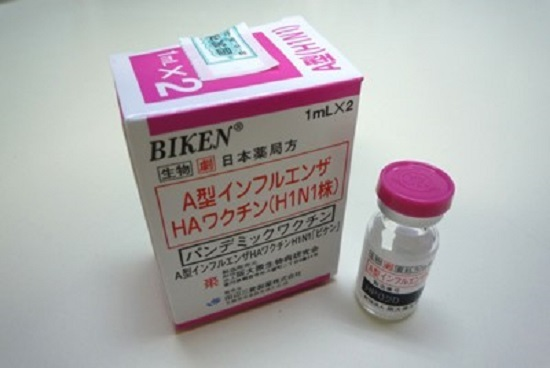
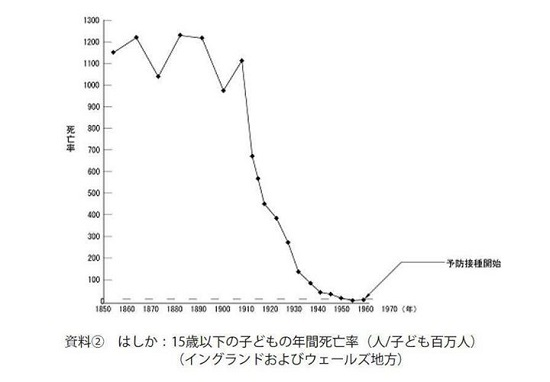
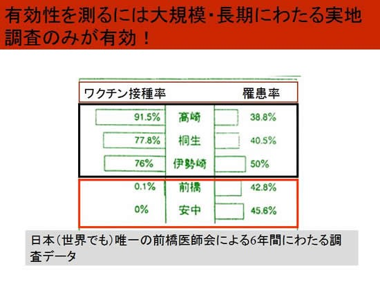
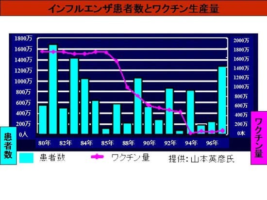
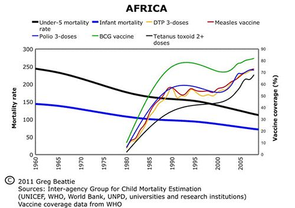
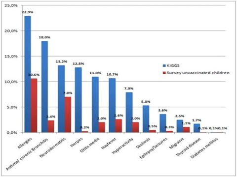

| ワクチンのすべて | |
| 内海聡 | |
| npo corporation yakugai-kenkyu center (2017) | |
はじめに
私はこれまで出版社が出している電子書籍とは別に、二冊の電子書籍を出版したことがあります。それは「精神科から抜けるための一歩目」という精神科問題の基礎となる書籍と、「うつみんがなぜ活動しだしたか？」という私の動機について書かれたものです。これらは３万字程度で値段も低く設定しており、どちらかというと小冊子のようなイメージで、軽く読んでもらえばよいとか、導入として読んでもらえばよいというくらいの気持ちで書いてきました。しかし本書「ワクチンのすべて」は軽くという内容ではありません。字数も８万字以上ありますし、私がなぜワクチンを否定するのかの科学的根拠、物質的根拠および社会的な根拠についてもすべて網羅されています。まずはこの資料を周りの人の説得材料に使ったり、医療関係者はもとより教師や保健士や政治関係者に対抗していただきたいです。本来は争ったからいいというものではないのですが、彼らのほとんどは本書に書かれていることなど知りもしませんし、知っても拒絶するという傾向が強いので、継続して主張し続けることと多くの方に伝えていく事が必要なのです。
私が有名になった情報媒体の一つにFace Book(以下ＦＢ)がありますが、２０１６年１２月の段階で私のアカウントは書き込み停止になっており、何度も何度も大した理由もなく停止させられています。しかもその理由はワクチンに関するネタが結構多いという事実があります。業界としてもワクチンを全否定する私の存在は、疎ましくてしょうがないのかもしれません。とりあえず特定の人物や特定の記事に対しての圧力が強まっているのは確かであり、同じような内容でも何のペナルティも課せられない人たちもたくさんいて、ＦＢで行っている情報発信、啓蒙、宣伝、講演会の情報などは、私に限らず流しにくくなってきています。言論統制といわれても仕方ないような状況が、ネットを中心に広がってきているのです。現在の医療において流されると困る情報の代表が、ワクチンに関するものでしょう。それは癌や精神科の問題よりも流されると困る風潮があるわけです。
だからこそ私たちはワクチンについて学ばなければなりません。
最後にいつも通り私を支えてくれる妻と娘に感謝の言葉を贈りたいと思います。
１ ワクチンとは何か
ワクチンについて名前を聞いたことがないという方はさすがにいないでしょうが、ではワクチンの定義は何かと問われると、実は答えに窮してしまう方が多いでしょう。定義上だけでいえば「病原体（特にウイルス）から作り、これを人体・動物体に予防接種と称して接種し、体内に抗体を生じさせ予防する薬品」などということになるでしょう。しかしこれはもちろん建前だけであり、感染症の問題でワクチンが重視されなければいけないのは、それがすべて嘘だからです。最初に結論を言ってしまうなら、最も重要なことはワクチンのすべてが効かないということです。これはもう例外なくどれもこれも効きませんし、ペットのワクチンであっても畜産されているものに打たれているものであっても効きません。本当にとことんまで効きません。
しかし、そう言うだけでどれだけのものたちが逆ギレするでしょうか。効かないことは多くの研究により証明されていますが、当然ながら医学者や製薬業界たちは決して認めはしませんし、それどころか効くという研究がいっぱいあることを指摘するでしょう（そのことの問題は後述します）。そしてなにより一番逆ギレするのは日本の親たちです。私たちがやってきたことが間違いだというのか、そんなことは認められるはずもないしみんなやっているのだから間違いはない、そもそも自分という大人がやっていることが間違いのはずはなく、権威や偉い学者たちが言っているのだから間違いなわけはない。そうやって毒親（毒を盛って正当化する親）たちは一生正当化し続け、子ども殺しにいそしんでいるのが現状だといえるでしょう。
法律でいうとワクチンに関するものを予防接種法といいます。この予防接種法こそが稀代の悪法だとしたらどうでしょうか。歴史を紐解くと１９４７年にＧＨＱの指導のもとで予防接種法が定められ、みなに予防接種が強制されていきました。そのくせ事故が起こっても保証する仕組みがなかっただけでもおかしいとは思わないでしょうか。実はこの法律は日本人を人体実験しようとしたことに変わりはありません。このような法律は世界になかなかないものであって、この法律に日本はずっと苦しめられました。京都や島根で実施されたジフテリアの予防接種では、８０数名の１～２歳児が死亡し１０００人近い被害者が出ましたが、国は各地から報告される接種事故を公表しませんでした。１９７０年にワクチンの被害児を持つ親たちが集まり、厚生省に訴えを起こしたのがきっかけとなって、少しずつ変化が起き始めました。１９９４年にも予防接種法は改定がありましたが、これは後述するインフルエンザワクチンの話ともつながっており、また最近になって風潮が変わってきているのが問題です。
ワクチンが効かないということを医療関係者、特に御用学者などと呼ばれる人たちや製薬会社が認めるはずもないのは当たり前のことです。それを認めれば飯のタネが一つ減ってしまうのですから当たり前ですし、お上がいうことだから間違いないというのは、日本人に骨の髄まで染み透った洗脳ですから。彼らにとっては子どもや市民などはカモであり金のなる木でしかありませんし、その嘘がまかり通るためにはどんなことでも手段はいといません。こんな世界の中で判断さえできない子どもに対してワクチンを打つなど、どれほどの虐待を犯しているのだろうと思います。大人は自分で調べて自分で決断するのが基本であり、子どものためならすべてをなげうってまで行動するのが真の親です。しかし、もはやそんな親を見つけるのは難しい状況になっています。
私は「医学不要論」という書物を書いたことがありますが、その中で三つの聖水という言葉を作りました。かの有名なロバート・メンデルソン博士は四つの聖水を主張しましたが、私は現代医学の三つの聖水として「向精神薬、抗ガン剤、ワクチン」を挙げています。そしてこれら三つを聖水にした理由は、すべて効かない事が一番の理由です。そして効かないどころかすべて有害であり様々な弊害をもたらします。最後の問題として非常に多額のカネが動くビッグビジネスだということがあります。だからこそこの三つの聖水をとりあげたのですが、ここでも大体逆ギレされるのが一般的です。私は抗ガン剤をやって腫瘍が小さくなった、精神薬を飲んで私はよくなった、ワクチンで私は感染症になっていないと逆ギレするのです。
しかし、多くの研究を見てもそうですがこれらが効くなんてお門違いもいいところです。この本はワクチンの本なのでほかの聖水の話は書きませんが、抗ガン剤とは実際は一時的に小さくなったように見せるだけで、反抗癌遺伝子を刺激しむしろ癌を増大悪化させることがわかっています。もし治ったなんて人がいれば、実は抗ガン剤をやらなくてもよかっただけの人ばかりです。いわゆる癌ではないのに癌と診断されている人が後を絶ちませんが、そのことを指摘するだけでも一冊の本ができるので、もしご興味があれば「医学不要論」も読んでいただきたいですね。精神薬についても同じで麻薬や覚せい剤と同じ成分なのですから、ヤクでよくなるわけもなく結局ラリって麻痺しているだけですが、ヤク中＝ジャンキーと同じくそのヤクが必要だと、医者や医療関係者以上に患者や患者家族が主張しているのですから始末に負えません。精神薬の嘘、精神医学がつける病名そのものの嘘は、拙著である「精神科は今日も、やりたい放題」「大笑い精神医学」「心の病に薬はいらない」「断薬のススメ」「睡眠薬中毒」などを読んでもらえばと思います。
ただ、この本はワクチンの本なのだからワクチンについて書かねばなりません。ワクチンとはいったいなんなのか、これを一言で表現するなら支配であり統制であり病気作りです。虐待という言葉を使ってもいいですが、それよりも支配や統制のほうがぴったりきます。その他にもワクチンをあらわす的確な表現はいくつかあるでしょう。たとえば金儲け、たとえば子殺し、たとえば無駄、たとえば家畜化、なんでもありますが確かにこれらはワクチンのことを的確に表現しています。これらを全部踏まえたうえでのワクチン＝統制です。このことは１２章におけるワクチン世界戦略や、１６章のワクチンに隠された陰謀に通じてきます。
もしあなたがワクチンについての嘘を知りたいと思うなら、徹底的なまでに自分を一度否定できなければ無理です。そして徹底的なまでに頭を真っ白にして、今まで詰め込んできた無駄かつ有害なデータをリセットし、そこから知ろうとしない限り無理でしょう。医療界や製薬業界はあなた方がカモであり奴隷であり、どこまでいっても金づるであることは見越しており、どこまでも騙し続けることが出来ると確信しています。そして少々市民に知られたところでメディア操作などにより、どこまでもごまかしきれると確信しています。行政にロビー活動すればバカな市民など従うと思っているのです。それはあなた方が真実を知ったとしても決して行動しないし、それを変えようとはしないことを知っているからでもあります。
だからワクチンとは何かと問われたとき、それは親の試金石であるというふうに表現することもできます。親は少しわかった気になるとまさに２０章のような人間になります。そして自分は子どもを守っているとさえ勘違いしだしますが、そのような少しわかった気になっているだけの毒親だらけだから、今の社会が確立したのです。ワクチンとはただの注射という問題ではなく、毒物がどうたらとかそういう問題でさえなく、私たち大人が次世代に、子どもに対して何を突き付けられているのか、何を残していくかという根源的概念、それが問われているのだということを肝に銘じなければいけないのです。
２ ワクチンを考えるときに最も重要なこと
ワクチンについての嘘を知ろうとするとき、最も重要なことはなんでしょうか。その時にほとんどすべての人類は、科学的な根拠やデータであると考えます。実はこれがいちばん間違いなのですが、洗脳された奴隷国家日本ではなかなかこのことが伝わらないのが現実です。
たしかに私も科学的な研究を見ることがあります。ワクチンに対して肯定的なものも見たことはあります。昔のほうがいろんなデータを見ることが多かったのですが、最近は全部似たようなものだということがわかり、本を書くときくらいでないと見なくなってしまいました。そしてこの本でも多くの科学的研究や科学的事実を掲載していますが、そうであるのになぜ科学的な根拠やデータがダメなのか、と思う人がたくさんいることを私は知っています。いちおうダメな理由をあげますと、やはり科学的な根拠やデータというのはすぐに捏造したり、操作したりすることが出来るという点です。そしてそれよりももっと重要な点は、今の科学的な研究方法が間違っていることに人類が気付いていないことにあります。だからこそ現実と乖離があるのですが、その乖離を偶然と考えてしまうくらい、人類は洗脳されていることに気付いていません。
具体的に人類が信じているらしい科学的根拠やデータの嘘について書いてみましょう。一番わかりやすいのは、研究データを直接捏造してしまう方法でした。これはわかりやすいし割合はかなり多いのですが、これだけの指摘だと洗脳人類たちは科学がやはり正しいなどと考えてしまうでしょう。一昔前は降圧薬ディオバンがニュースにも流れ有名になりましたし、有名な抗うつ薬パキシルも捏造の限りだったことがちゃんと公式報道されていますが、あれらは氷山の一角以前の問題なのです。列挙するときりがないのですが、このあたりならネットを使えばいろいろ出てくると思いますので、自分でも調べていただきたいと思います。
それよりも科学的根拠を捏造するもう少し高等なテクニックを、皆さんにご紹介したいと思います。まずは判定人数の操作です。これは簡略化して説明しますが、あるクスリを試験して効果を判定するとします。１００人の人間に毎日クスリを飲んだり打ったりしてもらい判定します。そしてたとえば３か月で判定するとして、副作用や副反応などの強い症状により、途中でそのクスリを４０人がやめてしまったと仮定します。その後６０人が試験をやり遂げ、３０人がこのクスリは効いたと判定したとします。そして、３０人はこのクスリは効かなかったと判定したとします。そうすると皆さんはこのクスリが何パーセント効果があったと判定されるかわかるでしょうか。
この質問をしている段階でイジワル問題というのがわかっているはずなので、違った見方を多くの人がすることでしょうが、通常は３０/１００で３０％と考えることでしょう。しかし当然答えは違っていて、３０/６０で５０％の人に効果があったことになります。４０人は副作用などで脱落したので効いてないどころかより有害なのですが、これらは数に加えなくすることが出来ます。これを脱落操作などと呼んだりしますが、製薬会社や大学病院などの研究ではこのような操作がよく行われます。自分たちにとってオイシイ被験者だけを対象にして数字をまとめてしまうのです。こんなことをやっている段階で科学的根拠など期待できようもないのですが、体裁のきれいな論文の多くはこの技法を使っています。つまり権威ある論文や研究の多くにこの操作が使われているのです。そしてそれを本当の意味で見張っている機関など存在しません。学会や有名雑誌自体がこのようなものたちの味方なのですから。
もちろん方法はこれにとどまりません。たとえばあるクスリについて○○病に使うクスリがあると仮定します。精神薬が麻薬と同じでありわかりやすいのでこれを例にしましょう。精神薬の嘘は拙著に書きましたが、精神薬の多くは麻薬と同じなので頭が働かなくなりよくならない、しかしこの頭が働かない＝感じなくなるをよくなったとして判定しています。これは当然本質的には何もよくなってないので嘘ですが、巧妙に論文や研究を操作できます。また精神薬には麻薬や覚せい剤と同じ数多くの危険な作用があり、その中には食欲中枢の破壊やバカ食いなども含まれるのですが、食欲中枢を破壊させる麻薬をうつ状態の人に使ってみたらどうなるか想像してみてください。うつだとほとんどの人は食欲が低減していますが、精神薬＝ドラッグなので食欲だけは見かけ上よくなったことになります。ちょっと考えればこれは原因など全く解決されておらず、よくなったなんてとても言えませんが、よくなったとしてしまえばいいのです。つまり調査後のアンケート項目に「食欲は増えましたか？」と載せればよいわけです。当然多くの人がそのアンケートに丸をしますが、そうするとこのクスリは立派に「効果があるありがたいクスリ」として認められることになります。こうやってろくでもない作用ばかりなのに認可されているクスリは後を絶ちません。
さらにいえば医学界や食業界などで使われ一番信頼されている２重盲検試験、これが世界最悪の嘘を作る検査方法だと分からない限り、医学界の嘘を見抜くことはできません。それは仮に捏造や操作をしなかったとしてもです（もちろん前述以外にもたくさんしていますが）。２重盲検試験とは被験者を無作為に２つにわけ、片方は偽薬、片方は本物のクスリを投与し違いを比べる検査です。そしてたとえば偽薬が３０％効果が出て、クスリが４０％効果が出れば、有意差ありなどとなりクスリとして認定されます。しかしこの段階で実はおかしいと思わなければいけません。ただそのシンプルな考え方を、もはや人類はできなくなっているのです。なぜならそのクスリが効くというなら、作用機序に基づいて作られているはずなのですから、まずは理屈上で効果１００％にならないといけません。それか厳しくてもせめて９５％くらいの効果は出てほしいものですが、当然ながらそういうクスリはまず見当たりません。
ただ２重盲検試験の嘘はその点が一番ではありません。３０％と４０％で差が出たときに、その差は本当にクスリからもたらされているのかが問題なのです。どんな物質でも思い込み効果によりある程度は効果が出るのはさすがに常識なのですが、そのクスリが思い込み効果で効いても、２重盲検試験で偽薬より効果があるように見せかけることは可能です。そのからくりは前述の操作もそうですが、別の技術として背景因子の存在があります。試験のグループというのは無作為で分けてもなにかしら特徴は存在します。残念ながらこういう試験ではその背景因子をすべて特定するのは困難であり、背景因子は無数にあるのだからなおさらです。しかしそこで背景因子に明確な違いが生じてしまう（無作為なのでたまにある）と、クスリが有効でなくても有効であるかのようなデータが出ます。
たとえば無作為に分けたＡグループ（偽薬グループ）とＢグループ（効かないクスリグループ）で、よく調べたら砂糖をＡグループがＢグループより２０％多く食べていたと仮定します。砂糖が猛毒についてはもはや説明しませんが、この条件だとＡグループのほうが、悪くなったり何か飲んでも効きにくい要素が増えている可能性が高まります。そうするとこれで２重盲検試験してしまうとクスリは効かない物質でも、Ｂグループのほうが効果が増したように見えます。これで効くという論文が出来てしまうのですが、じゃあなんでもありじゃないかなんてツッコミを入れたくなる人が必ずいるでしょう。どんな検査をしてもそういう検査結果になりうるじゃないかと。
そのとおりです。実はここからが医療行政の闇なのですが、最初に世界で認可が通るアメリカＦＤＡなどの場合、製薬会社が論文を認可機関に提出すればよく、それは基本的に２つの肯定的な論文を提出すればいいことになっています。違う言い方をすればどんな否定的な研究結果が何百あっても関係なく、製薬会社は数撃ちゃ当たるで研究を組み立てれば、いつかは効いたことにすることができるのです。もちろんこの手法だけではなく前述したものを巧妙に組み合わせて、効かないものを効いたということにできますし、人類を科学思想に貶めておけば、それが信頼できると錯覚させ続けるのは実は簡単なのです。こんなことも知らない人々が、やれ陰謀論だＮＷＯだ代替療法だというのですから、今の日本がどうしようもないのは当たり前ですね。
このほかにもいろんな騙しテクニックがあるのですが、こうやって作られてきた科学的根拠、データ、ソース、などという概念が普及しているからこそ、人々の病気は治らず医療費は増え、みな病院通いで薬漬けなのです。まず真実を見極めたいと願うなら、単に観察することです。あなたの周りでワクチンをうって感染症にかかっている人がいないか、効くといわれている抗ガン剤でいったいどれだけの人が亡くなっているか、精神薬を飲んでいる人がどんな顔貌や風貌をしているか、そしてその人の昔の様子はどんな感じだったかを。
ワクチンについて述べるなら、小児科医や薬剤師は皆さんに効くという論文や研究を紹介するかもしれません。その効くという論文はこれまで紹介したような裏があるわけですが、そんなことを彼らは知りませんし、知っても認めようとはしないのです。小児科医や薬剤師にとっては、子どもが病気になってもらわないと儲からないのですから。しかし、世の中にはこの本に記載されているような逆の研究が数多く存在します。それを両方見るとなるともう一般人には判断がつかなくなりますね。ではどうすればいいのでしょうか？
で、最初の話に戻るわけですが、ワクチンを考えるときに最も重要なことは科学で見ることではありません。まずワクチンでもクスリでもなんでもそうですが、最初に見るところはスポンサーです。論文や学界やシンポジウムのスポンサーが誰であるかを見るのが基本中の基本であり、御用学者や大学病院が、スポンサーされた研究所が、論文を書いているかどうかから嘘かどうかを見極めるのです。次にスポンサーされていない論文や研究をよくみましょう。海外では独立系の研究機関も多く、市民の寄付で成立していますからスポンサーに左右されません。日本の新聞やメディアの腐敗ぶりは著しいですが、理由の一つはスポンサーの意向には絶対服従であり、事実を表に出すことさえ許されないからです。それと同じ構図は医学界の中にも根付いており、医学はもともと人を助けるものではないということから考えられるようにならないといけないわけです。
データはまったくあてにならないという視点を持ってデータを見る、そうすればこの著書に書いてあるような情報を、自分で見つけられるようになることでしょう。
３ ワクチンの構成成分について
さて、では少しずつ本題であるワクチンとは何かについて考えていきましょう。まず一般市民がワクチンについて知っておかねばならないのは、ワクチンが何でできているかということです。ちょっとした人なら材料が何かくらいは考えますが、最近は食べ物の中身さえ考えない人が増えましたから悲しいことです。まずあなたが親であり祖父母であり、あなたの子どもや孫が大事だと思うなら、自分で調べてみることにしましょう。ワクチンは以下のような成分でできています。それは公式文書（添付文書といいます）にも記載されている初歩的なことであり、それをみて一般市民の大半は打つ気がなくなってしまうことでしょう。
・水銀。神経毒であることが十分に立証されていますが、依然として世界中のインフルエンザ・ワクチン（複数回接種タイプ）に入っています。あらゆる金属の中で最も有害性の高いものが水銀であり、水俣病でその怖さはご存知の方もいるでしょう。その他のワクチンにも水銀が残留しているものがあり、子どもの水銀許容量は比較的低く、ワクチンを打つだけで水銀を多量に摂取してしまいます。またこの水銀は食べるのとわけが違い食べるより格段に吸収されることになり、その水銀は免疫の異常をもたらすこと、一番は脳にたまり脳の異常をもたらすことが分かっています。
・アルミニウム。骨、骨髄、脳の変性を起こす可能性のある毒です。非常に水銀との相性が悪く毒性を増強することが分かっています。ワクチンの危険性について、まず知っておかなければいけない基本的なことが、アジュバント（免疫増強剤）なのですが、子宮頸がんワクチンをはじめとする最近のワクチンには、アジュバント（免疫増強剤）が添加されています。アジュバントの働きでワクチンの有効成分が、より長く体内に残留しワクチンの効果を増すというのが建前です。
アジュバントには沈降性タイプと油性タイプの２種類があり、沈降性アジュバントの代表格が水酸化アルミニウムです。この水酸化アルミニウムは脳の運動ニューロン死滅作用が強いことが分かっています。油性タイプの代表格がこれまた子宮頸がんワクチンなどに含まれている「ＡＳ０４」です。ウイルスなどを油膜で包むことで長く残留させる作用があります。
・グルタミン酸ナトリウム（ＭＳＧ）。いわゆる調味料などに入っている成分ですが、覚せい剤と似たような組成と作り方になっており、危険極まりない物質であることはまだまだ知られていません。私が住んでいるハワイやアメリカでは、ほとんどの食品やレストランで「ＮＯ ＭＳＧ」と書かれており、危険性がある程度認知されていることがうかがえます。これがワクチンの中に入っていると容易に脳関門を通り越し、脳に影響を与え、てんかんやけいれんや食欲中枢の破壊をもたらします。またワクチンにこの物質が入っていることは、別の大きな問題をもたらします（このことは他の物質でも同じことが言えます）。
・ホルムアルデヒド（防腐液）。いわゆるホルマリンというやつですね。発ガン性物質として有名な物質であり、シックハウス症候群などを起こす物質としても有名です。つまりホルムアルデヒドが入っているだけでアレルギーやアトピーはかなり増しますし、ワクチンによって引き起こされたアレルギーやアトピーは、単に食を変えても治りにくいことが多いのです。
・ポリソルベート８０、ツイーン２０など。これは合成界面活性剤という物質です。水と油を混ぜるために使うのが合成界面活性剤の基本用途ですが、これは種々の場所で体のバリアを壊します。合成界面活性剤というと経皮毒に代表される洗剤やシャンプー、リンス、化粧品などによく入っているといわれ、皮膚バリアを壊すと指摘されてきました。またポリソルベート８０はメスのネズミで不妊症、オスのネズミで睾丸の萎縮をひきおこすことがわかっており、ネズミにおける注射部位のガンを発症することもわかっています。このような成分を入れていることから、ワクチン＝不妊促進＝人口削減のためではないかと言われてきたわけです。
・猿、犬の腎臓、鶏、牛、人間の胎児細胞や遺伝子、それから作った豚や牛のゼラチンなど。細胞や遺伝子が入っているのはウイルスを培養するときに、このような動物性の細胞を使うからです。それがそのまま注射の中に入っており、アナフィラキシー反応やアレルギーなどを起こすことがわかっています。本来私たちは肉や魚を食べますが、口から胃腸を通って吸収されるものはそんなに害はありません。しかしこれが注射として入ってくると、本来の経路と違いますのでこれは猛毒になります。ゼラチンは３種混合ワクチン、水疱瘡と帯状疱疹のワクチンなどにも入っているようです。
・ワクチンの材料である動物細胞の培養で生じた細菌や野生のウイルス。これは他の動物の細胞ということではなく、その細胞に寄生していたり未知のウイルスだったりが入ってくるということです。当然培養下にある動物は人間ではなく、免疫系は全く同じではありません。狐にはエキノコックスという寄生虫がいるのは有名ですが、人間にはエキノコックスはいないし入ってしまうと感染症になってしまいます。エキノコックスはウイルスではありませんが、それと似たものが入ってくる可能性をいつも持っているのです。
これら以外にも添加物や抗生物質なども入っており、材料を見るだけでも打ちたくないという気持ちが出てくるのが一般的です。しかし日本でも定期接種がどんどん増えてきており、接種年齢も引き下げられています。一番接種数が多いと評判のアメリカでは、数十回の接種と１００種類以上の有毒物質を取り込むことが分かっています。
（ワクチンの材料の注射の写真）

また、ワクチンは子どもに打つから安全性が高いと思われているようですが、ワクチンは基本的に劇薬指定されています。劇薬とは「『毒薬』に次いで生体に対する作用が強く、過量に使用すると、きわめて危険性の高い医薬品」であり、「一般的には、①微量でも致死量となるもの、②中毒作用のあるもの、③蓄積作用が強いもの、④薬理作用が激しいもの──などをさし、取り扱い・保存に 厳重な注意が望まれ『薬事法』で規定されている」などとあります。
（劇薬の添付文書）

ちなみに毒薬という区分もあり以下のように定義されています。「毒性が強く、少量でも生命に危険をおよぼすおそれのある医薬品と厚労大臣が指定したもの。経口致死量が３０（㎎／㎏体重）以下のものをいう」「容器には黒地に白枠、白字で『毒』の文字を表示し、ほかの薬と区別して、カギのかかるところに保管しなければならない」
ワクチンはいわゆる劇薬ですが重大副作用として以下のようなものが、添付文書には記載されています。
①ショックなど：「ショック（血圧・脈拍低下、死ぬ場合も）、アナフィラキシー様症状（急性薬物アレルギー、死亡リスク）、じんましん、呼吸困難、血管浮腫など......」
②脳脊髄炎：急性散在性脳脊髄炎（ＡＤＥＭ）があらわれる（当然、死の危険もある）。
③ギランバレー症候群：「頻度不明」
④けいれん：これも「頻度不明」（以下⑤～⑪も同様）。けいれん、熱性けいれん（発熱をともなう）があらわれることがある。
⑤肝機能障害：肝機能障害、黄疸、ＧＯＴなど肝機能値の上昇などが起こる。
⑥ぜんそく：ぜんそく発作を誘発することがある。
⑦血小板減少：血小板減少（血小板は出血を止める作用がある。減少すると内出血が起こる）、続いて血小板減少性紫斑病、紫斑（紫色の皮下出血）、鼻出血、口腔粘膜出血......など。
⑧血管炎：アレルギー性紫斑病、白血球破砕性血管炎、血管炎......これらは激しいアレルギー反応で発症する。
⑨間質性肺炎：間質性肺炎があらわれることがある。発熱、咳、呼吸困難など臨床症状に注意する。
⑩脳炎・脳症：脊髄炎、脳炎、脳症があらわれることがある。
⑪皮膚がズルズル：皮膚粘膜眼症候群があらわれることがある。皮膚や粘膜が水ぶくれからドロドロに溶けていく症状のこと。
また他の副作用として、
・アレルギーとアトピー性皮膚炎
・関節炎
・ぜんそく
・自閉症
・乳幼児にプロトンポンプ阻害薬の投与が必要となる胃酸の逆流
・ガン
・糖尿病（乳幼児、児童）
・腎臓の病気
・流産
・さまざまな神経疾患と自己免疫疾患
・乳幼児突然死症候群(ＳＩＤＳ)
他にもまだまだあり、きりがありません。ぜひ自分でも公式添付文書を見ていただければと思います。まずはここが初歩中の初歩です。これを子どもに打って満足しているのが、この国の現状であり毒親の本性なのです。
４ ワクチンに関する歴史の嘘
さて、材料について指摘をすると必ずいくつもの反論を受けることになります。特に親たちは自分が正しいと思い込みたいだけなので、どこまでも自分で調べることなく嘘をつき続けます。そしてそのような親たちは俗説を信じ、権威を信じる事しか頭にないという特徴があります。俗説の代表格は「ワクチンが歴史的に感染症を防いできた」というものでしょうか。しかしこれこそがワクチンマニア（推奨者や御用学者）が出してくる、巧妙な嘘の代表格です。最近、製薬会社の一番のターゲットはワクチンであり、豊富な資金で工作員を雇い、あらゆるところでワクチンに関する嘘をばらまいています。
どこが嘘なのか簡単に見ていきましょう。
そもそも感染症やワクチンの領域で有名なジェンナーは、「牛痘で天然痘が予防できることを証明した」としましたが、これがそもそもの嘘なのです。たとえばユースタス・マリンズは「専門家の中には、さまざまな要因により──天然痘はいずれにせよ18世紀には自然消滅していた」と著書に記載しています。それだけならまだしも「種痘が天然痘を拡大させた」というのが真実だったらどうしましょうか。たとえば「普仏戦争（１８７０～１８７１年）のあいだドイツ軍兵士全員が天然痘予防接種を受けた。その結果、壮健な５万３２８８人の兵士が天然痘にかかり、死亡率も高かった」（マリンズ氏）という記載もあります。つまり予防接種は天然痘を防がないばかりか、むしろ天然痘を増やした可能性が大なのです。
また英国では種痘接種が広まってから天然痘の流行が始まったことが、昔は公式に報道されています。その大流行のため２万２０８１人が亡くなっており、結局、英国政府は１９４８年に種痘の禁止に追い込まれています。この時点で、イギリスは天然痘の予防効果はないことを認めているのです。それどころか「天然痘大流行の元凶でもある！」ことを隠しきれなくなったわけですが、それでもイギリスが種痘禁止した１９４８年とは違い、敗戦国日本はＧＨＱ（連合軍総司令部）に種痘続行を強要されました。日本での廃止は１９７６年とイギリスに遅れること２８年となっています。
日本で明治に種痘ワクチンを導入したところ、逆に天然痘が大発生し、１８９２年には１６万５７７４人の患者が発生し、３万人もの人が亡くなったという記録があります。ドイツでも戦前からジフテリア等の強制的予防接種を採用していました。ところが１９３９年、ナチス政権時代には、ドイツではジフテリア患者数が15万人と天文学的に増大したことがわかっています。これに対して予防接種をまったく導入していなかったノルウェーでは、同じ時期に患者数はわずか５０人だったのです。予防接種が効かないばかりか天然痘やジフテリアの根絶には何の役にも立たず、むしろ増やしている様子がうかがえます。
アメリカでも皮肉な結果が出ています。ポリオ予防接種を義務化した州では、ポリオ患者が逆に７００％も増大していることが記録に残っています。「ポリオの『免疫血清』は、ルーズベルト大統領がこれを承認した当時、すでに危険で無益なものであることがわかっていた」（マリンズ氏）とあり、「実際には、アメリカにおける全ポリオ患者の原因は、ワクチンにある」とＣＤＣ（アメリカの疾病予防管理センター）も公式に認めています。また「１９７９年以降、米国では自然発生型あるいは野生型のポリオウイルスに起因するポリオ患者の症例は一つも見られていない」（『ワシントンポスト』１９８８年１月２６日）と報道さえされています。しかし、奇妙なことにポリオ予防接種は中止されることなく続行されたわけですが、これは奇妙なのではなく、効くワクチンなど普及させてはいけないわけです。
１８７６年、ジェームズ・ウィルキンソン博士は、「ワクチン接種は、まさに狂気の沙汰と言うしかない。これは、純粋な殺人である。」と断言しています。１８９９年には、アルフレッド・ワレス教授は、その著書『素晴らしい世紀』の中で、「ワクチンに効果があるというのは、幻想だ。それを法的に強制することは犯罪である。」と述べています。１９２０年に発行されたチャズ・Ｍ・ヒギンズ著の『ワクチンの恐怖』－大統領に宛てた陸軍・海軍内の強制ワクチン接種の廃止嘆願書－の中で、ニューヨーク市民の死亡診断書を１５年間にわたり入念に調査し、天然痘の死亡者数よりも、天然痘ワクチン接種による死亡者数の方が毎年桁違いに多いことを発見しました。そして、一般市民や兵士に対するワクチン接種の法的強制をただちに廃止するよう政府によびかけています。１００年以上も前から、ワクチンに効果がないことやその警告は行われてきましたが、すべて学会や製薬会社や政府が隠蔽と捏造を繰り返してきたのです。
世界中で感染症を防いできたのは、ワクチンではなくインフラ整備による環境改善、および市民や貧乏人の栄養状態改善によってであることは、私だけでなく多くの世界の識者が述べていることです。そこに救急医療の発展や抗生物質の開発が少し重なりますが、これは主因ではありません。たしかに世界において感染症死は減ってきましたが、この嘘が巧妙なところは、当初からワクチンは用いられていないか、用いられても感染症を逆に増やし被害を出してきたのに、ワクチンマニア（推奨者）がその経緯を決して語らず、最初と最後の数字だけを出して、ワクチンが感染症を防いできたという嘘を述べるところにあります。たとえば１００年前に１００００人の感染症患者がいて、現代でそれが１００人に減ったとすると、９９％の感染症減少率があり、それはワクチンのおかげだと嘘を述べるわけです。しかしそのワクチンがどのタイミングで導入されたかも、ほかの要素がどれくらい関係しているかも決して述べません。ほとんどのワクチンは感染症が９９％以上減ってから導入されています。麻疹や風疹やおたふく風邪、ジフテリアやポリオやヒブや日本脳炎などはその典型です。ここでも事例を一つだけ示しましょう。

この研究はイングランドおよびウェールズの研究です。縦軸は死亡率であり横軸は年代です。左が１８５０年であり右が１９６０年です。つまり１８５０～１９００年くらいまでははしかでも死亡率が高かったことが記されています。この時代に癌や心筋梗塞などはほとんどありませんから、主たる死因は外傷か感染症か老衰か、貧困による栄養失調か戦争による死くらいになります。しかし１９００年くらいから産業革命の影響などもあり、急速に死亡率が低下してきます。一番の理由はこれまでに示してきたように、インフラ整備による衛生状態の改善と栄養状態の改善です。減ってきている理由のどこにもワクチンはないのです。しかし感染死亡率が激減しても、少しは残ってしまうものです。その段階からワクチンが導入されるというパターンは後を尽きません。つまりワクチンが感染を防いできたわけでもなんでもないのに、最初の数字と最後の数字だけ取り上げれば、無知な日本人を騙してワクチンが防いできたよと言うことが出来るわけです。
ワクチンの問題は感染症の問題であり、感染症の問題は人類の普遍の問題であると同時に恐怖の問題でもあります。もしあなたが感染症のリスクを下げたければ、ワクチンを打つ前に常識を排して自分で調べる必要があるのです。
５ ワクチンが効かない理由
ではなぜ、ワクチンは効かないのに効くというふうに捏造されているのでしょうか？それ以上に不思議なのは、なぜ効かないのに一般市民は信じてしまうのでしょうか？そこには市民が洗脳されやすいという問題だけではなく、免疫というものに関して錯覚があるからです。
何が錯覚なのでしょうか？それは免疫というものは多種多様な構造をしており、それらがすべて機能しないと本質的な免疫にはならないということです。これは単に本質論なのですが、ワクチンはこの多種多様な構造をすっ飛ばして機能しているように見せかけます。この多種多様な構造は本当に感染した時に形成されます。これを免疫の世界では獲得免疫と呼ぶわけです。獲得免疫の代表が、はしかやおたふくかぜにかかるともうかからなくなるというアレです。だから昔はかかった子がいると、避けるのではなくむしろかかりに行けといっていたわけですね。これはちゃんと理にかなった行動なわけです。
しかしワクチンは感染の手順をすっ飛ばしてきます。気道の感染症であれば鼻や口やのどが第一関門であり、そこでも免疫とウイルスは闘っています。この闘いによって情報をあらかじめ体に教えるという役割も担っています。胃腸の感染症であっても胃酸で細菌やウイルスを殺すわけですが、それでも生き残る細菌やウイルスがおり、これもまた胃腸の中で闘い続けています。これによっても免疫は獲得されており、さらに体の中（細胞や血流の中）に入ってくると、今度は免疫細胞や抗体などが働き、さらに発熱をすることで免疫能を上げていくわけです。これは誰でも学べる免疫の基本になります。
ウイルスが入ってくると体は発熱するわけですが、これはウイルスが平熱よりも高体温下では生きていけないからです。もう少し医学的に説明すると、ウイルスに罹患して体内のマクロファージなどが相手をするわけですが、ウイルスなどを取り込んでサイトカインを放出します。サイトカインは、インターロイキン、インターフェロン、ＴＮＦなど多種のものがあり、サイトカインはプロスタグランジンＥ２の産生を促し、プロスタグランジンＥ２が視床下部に届くと、体温調節中枢は発熱を促すわけです。これらはすべてウイルスと闘うための防御機構であり、解熱薬はこの防御機構を阻害するので飲んではダメという話になります。
ワクチンには大きく分けると三つの種類がありますが、これについては後述します。種類が違えば少しコンセプトは変わりますが、基本的にワクチンというクスリの考え方は、少量の病原体を入れることで免疫を刺激するということで変わりません。これだけを聞くとまるでいいように感じますが、これが効果を発揮するのは自然に感染するからです。そうではなく「人口で作られたウイルスに」、「途中の経路をすっとばして」、「感染したようにみせかける」と、不完全な抗体だけが作られることとなり、むしろ人体はその感染症にかかりやすくなったり、かかっていても放置してしまうことになります。これを修飾感染とか修飾免疫などと呼ぶことがあります。
実際に、小児科医であっても保健士であっても教師であっても公務員であっても、こんなことさえ知らないでワクチンを強制してくるのです。みなさんもおかしいと思ったことはありませんか？感染症にかかるかどうかを判断するとき、抗体検査が陽性か陰性かでしか判定しませんね。しかし免疫というのは抗体だけで作られているものではないうえに、ワクチンを打った人の場合、抗体陽性でもかかっている人が多いです。ぜひ周りの方を観察してみてください。たとえばインフルエンザワクチンを打ったのにインフルエンザにかかっているとか。他の感染症でも同じですが、実はこれはワクチンを打つことによって中途半端で役に立たない免疫を作り、むしろかかりやすくしてしまっているのかもしれないのです。
他にも効かない理由があります。この場合はインフルエンザが分かりやすいですね。通常インフルエンザというと、Ａ型とＢ型があるのはご存知でしょう。Ｃ型は幼児のみ感染し、ほとんど流行しないといわれています。インフルエンザのウイルスはウイルスのとげの形によってＨ○Ｎ○型などと名付けられます。ウイルスは球形にとげが生えたような格好で、Ｈはヘムアグルチニン、Ｎはノイラミニターゼといいます。 Ｈは１６種類、Ｎは９種類あり、それらの組み合わせになるわけです。
このようなウイルスの場合、組み合わせが非常に多種多様で、それらのウイルスごとに少しずつ違い、免疫反応も異なるということが重要なのです。とくにインフルエンザウイルスは速いスピードで小さな変異を繰り返すことが有名で、だから一年前にインフルエンザにかかっても獲得免疫＝終生免疫が働かず、またかかってしまう人がいるわけです。これらのすべてを網羅したワクチンなど、たとえワクチンが効くと仮定したとしても作りようがありません。インフルエンザワクチンをつくるのには約半年、ウイルスの選定から入れると約１年かかるといわれ、流行と違うワクチンを打っても当然効きません。このことからインフルエンザワクチンなど宝くじ以下と表現されるわけですね。
さらに気道感染系のワクチンの場合、他にも効かない理由があります。たとえばインフルエンザウイルスは、鼻やのどから感染することがほとんどですが、鼻水や唾液に含まれる細胞性免疫のＩｇＡ（抗体の一つ）も働いています。抗体にもいろいろ種類があるわけです。しかしワクチンで作られる抗体は、当たり前ながら血の抗体だけで、免疫系全体がしっかり働いてくれません。これは御用学者でさえ部分的には認めているところです。だからこそ「防げないけど軽くする」という嘘をつくわけですが・・・。
先ほども書いたように、人間の体が病原菌やウイルスから体を守る免疫は、抗体だけでなく粘液や唾液であったり、マクロファージであったり発熱であったり、さらにいえば相互の情報伝達にあるわけです。だから終生免疫は獲得されますし、終生免疫がないものは体の全部を使って免疫を上げるわけです。 ウイルスなどがいきなり血液中に入り込むことはまずないことで、まれにありうるのは蛇に噛まれたり、蚊に刺されるくらいでしょうか。このような生物の原則を無視し、製薬会社や小児科医たちは抗体ができた＝抵抗力がついたとしていますが、本当は抗体ができたからといって抵抗力があがったわけではありません。一般人はこれにコロッと騙されます。そこに科学的とつければトドメですね。こうやって洗脳奴隷たちがたくさん量産されていくわけです。
６ ワクチンにはどんな種類があるか
ワクチンの種類というと、一般人は何のウイルスに使うワクチンかで考えるでしょう。それは間違っていないのですが、それ以前にワクチンの種類を考えるとき、三つの分け方があることを知らないといけません。ワクチンとは簡単にいえば病原体を体に注射する毒物ですが、このワクチンの毒の種類には大きく分けて、弱ったウイルスをそのまま打つ「生ワクチン」、ウイルスが死んでしまい（殺してしまい）活動しなくなったものを打つ「不活化ワクチン」、ウイルスがもっている毒素だけを無害化して打つ「トキソイドワクチン」、の３種類があります。
生ワクチンは生きている病原体を使い、「既存科学の嘘丸出しな理屈」上では不活化ワクチンに比べて、免疫力が強く免疫の持続期間も長いとされます。逆にいえば作用が強いため次に種類の違うワクチンを接種する場合、２７日間以上間隔をあける必要があると定められています。 不活化ワクチンは体内で増殖することはありませんが、「既存科学の嘘丸出しな理屈」上では弱いと考えられているので、数回の接種が必要となります（お金儲けのためです）。作用が弱い分、次に違う種類のワクチンを接種する場合、６日間以上間隔をあければよいと定められています。
この不活化ワクチンに全体菌ワクチン（加熱処理などして毒性をなくした病原体全体を使ったワクチン）と、コンポーネントワクチン（病原体の一部分を用いたワクチン）、リコンビナントワクチン（病原体の遺伝子組み換えを行ったワクチン）があります。全体菌ワクチンは百日咳・日本脳炎・インフルエンザ・Ａ型肝炎ワクチンなど、コンポーネントワクチンは肺炎球菌・髄膜炎菌性髄膜炎ワクチンなど、リコビナントワクチンはＢ型肝炎ワクチンなどがあります。最後にトキソイドワクチンは毒素のみを取り出し、さらにホルマリンで無毒化したワクチンです。数回の接種が必要になることは不活化ワクチンと同じであり、６日間以上の接種間隔をあけるのも同じです。
さて、これが大きく三つの種類で、まずこの時点でおかしいと思わないといけないのですが、皆さんがおかしいと思うことはおそらくないでしょう。ワクチンが体に入ってくるときにどんな形で入ってくるのか、これを生物学的に考える人はまずいません。科学的な知識などどこかに捨てた頭で考えたとして、どうやって入ってくるかを考えれば、大半のウイルスは生きたまま粘膜などを通り越して入ってくると考える事でしょう。それでだいたい間違っていません。あとは、一部が胃酸などで死んでしまい腸の中に流れてくるものもあります。しかしこれも死んでしまえば腸の中に自主的に入ってくることはありません。
ここでおかしいと思わないといけないのです。なぜなら本来免疫とは身体に対しての異物を排除するのが役割ですが、たとえば胃酸で死んでしまったウイルスというのはどれくらい害毒でしょうか？おそらくそれは大したものではないと推測されます。つまりなにがいいたいかというと、死菌やトキソイドがそのまま体に入ってくること自体が、本来の経路を通っていない異常な状態だということを知らないといけないのです。菌が本来入ってくるなら生菌がそのまま入ってくるか、死菌が腸の中などを一部通ることで、体の免疫は記憶したり反応できることになります（腸はそのような機能を持っています）。注射でこれを打つとどうなるかというと、前述したように通常の免疫をすっ飛ばして入ってきますので、本当の免疫にはならないのです。
通常のワクチンの科学では、弱ったウイルスや死んだウイルスを打つと、そのウイルスに対しての抗体ができ（いちおう死んでいても作ります）、後にそのウイルスに感染したときには以前にできた抗体があるので、似たような同種のウイルスがきても抵抗しやすくなるというのが理屈です。ではなぜあなたの周りに、ワクチンを打っているのにかかっている人がいるのでしょうか。なぜ昔は防げるといっていたのに、後になって「防げないが軽くする」と言い出したのでしょうか。なぜこの書籍にあるような多くのデータが残っているのでしょうか。それはこの抗体は本質的には役に立たないことを示しているからです。人体をいじくって抗体を見せかけ上作って、効くかのように錯覚させているのが、製薬会社と小児科業界の詐術、三種の分け方そのものが無意味なのです。
この三種の分け方以外に法律的な分け方として、定期接種と任意接種というものがあります。定期接種とは感染すると重症化したり、感染力が強く集団感染するおそれがあると国が定めたため（ウソですが）、国の法律（予防接種法と結核予防法）で決まった予防接種です。一定の年齢になったら予防接種を受けることを強くすすめられていますが、法律的には強制ではありません。ほとんどの場合、対象年齢の範囲であれば公費負担で受けることができます。この公費で親たちはコロコロと釣られていくわけです。任意接種とは、受けるか受けないかは個人や親の判断にまかされている予防接種です。以下、参考にしてください。
【定期接種】
・生ワクチン
ＢＣＧ ポリオ 麻疹風疹混合（ＭＲ） 麻疹（はしか） 風疹
・不活化ワクチン
三種混合ワクチン（ＤＰＴ）/二種混合ワクチン（ＤＴ） 日本脳炎 インフルエンザ（６５歳以上、一部の６０－６４歳の対象者） Ｂ型肝炎 水痘 肺炎球菌 ｂ型インフルエンザ菌（Ｈｉｂワクチン）
【任意接種】
・生ワクチン
流行性耳下腺炎（おたふくかぜ） 黄熱
・不活化ワクチン
インフルエンザ（定期接種の対象外者） Ａ型肝炎 狂犬病 コレラ ワイル病秋やみ ＨＰＶ（ヒトパピローマウイルス）
・トキソイド
破傷風トキソイド ジフテリアトキソイド
これらは製薬会社の作ったワクチンによっても変わります。
たとえば子宮頸がんワクチンでもガーダシルというワクチン（ＭＳＤ社）と、サーバリックスというワクチン（ＧＳＫ社）があります。入っている材料やウイルスも少し異なっており、これらをすべて説明すると、その説明だけで薬剤書が出来る情報量となります。本書の目的はそこにはありませんので、詳しく知りたい方は市販の薬剤書などで、製薬会社別の種類はご確認ください。
７ ワクチンが効かないという研究たち１
すでに昔からワクチンが感染症を防がないという話はご紹介しましたが、では実際に、ワクチンが効かないという現代の研究を紹介していきましょう。皆さんが洗脳された奴隷であるということは何度も述べていますし、私はなにをどうやっても日本人がその洗脳から逃げられないことを知っています。そのような人たちに、一つ二つの研究を紹介したところで、また同じ反応（たまたまとか偶然とか作り事とか陰謀論とか）に陥るくらいバカなのも知っています。そしてそうやってバカにされた後に、御用学者の研究を見て、自分のプライドを慰めることも知っているわけです。だから、この本はすべての人が理解できるとは思っていないし、この世界にある裏の姿を見たいというものだけが理解すればいいことだと思っています。
まあ、そんな皮肉はそろそろ終わりにして一番初歩的な研究から紹介しましょう。一番初歩といえば、やはり前橋医師会によるインフルエンザワクチンの研究ですね。インフルエンザの学校での集団接種は、１９９４年以降全国で中止されているのですが、なぜかご存知でしょうか。こんなことはネットでちょっと歴史を調べればわかる当たり前の話ですが、とりあえず知っていれば、ワクチンについて最低限の勉強はしたといってもいいでしょう。前橋医師会による調査では、インフルエンザワクチンに予防効果がないことが証明されたのです。非常に大規模で長期間にわたる疫学的データだったため、国も認めざるを得なくなってしまいました。いまだこのケースは例外的なケースであって、厚生労働省はアメリカの製薬会社などのデータを引用するだけです。製薬会社や大学病院やＣＤＣなどのデータは、前橋データより規模も小さく短い調査で、スポンサー含めとてもあてにならないのですが、そちらを根拠に御用学者は論点を組み立ててきます。
この研究を簡単に説明すると、１９７９年にあるワクチン事故をきっかけとして一時集団接種を中止し、その後前橋医師会が調査を始めました。そして約７５０００人を対象に６年間にわたって前橋市とその周辺のデータをまとめたのです。その結果、効かないことが分かって全国でインフルエンザワクチンの排除運動がおこり、１９９４年にインフルエンザワクチンの集団接種が中止されたのです。この結果１９９５年にはインフルエンザワクチンの接種率は激減しました。しかし市民というのはどこまでも愚かな存在であり、忘れる事しか能がなく、製薬会社や小児科医たちはそこに付け込んできます。５年くらいは接種率が減っていたのですが、過去のことなど持ち出させないようにして、再びインフルエンザワクチンを打つのは当たり前という風潮を作っていったわけです。
調査内容でいうと高崎市、桐生市、伊勢崎市の三つが、インフルエンザワクチンの接種を受けた市で、７６％～９０％くらい接種率がありました。一方接種を受けなかったのは前橋市と安中市でこれはほぼ０％です。昭和５９年と６０年のデータでは、まずワクチンを打っても打たなくても、ほかの年と大して罹患率に差がないこともさることながら、まったく打っていない前橋市と統計上有意差がないか、伊勢崎市などは接種を受けていない二つの市より罹患率が高いほどでした。
（前橋スタディの表）

（ウェブサイトＴＨＩＮＫＥＲより抜粋）
もう一つ、小児科医の山本英彦氏によるインフルエンザワクチンの無効性を示すグラフをご紹介しましょう。水色のグラフがインフルエンザの患者数で左の縦軸が人数です。紫色のグラフがワクチンの製造量であり右の軸が本数です。本数は打った本数に近くなりますが、打っても打たなくても患者数は影響を受けているとはいえません。つまり効果がないということであり流行などは別の要因が疑われます。１９９４年に製造量が激減したのは、先ほどお伝えした前橋レポートの公表もあり、学校での集団接種が中止されたからになります。

そもそもインフルエンザは変異が多いウイルスであり、ワクチンで効果など期待出来ようはずがありません。たとえば１９９２～９３年のインフルエンザ・シーズンの場合、ワクチン用のウイルスの予測は８４％外れたというデータがあります。１９９４～９５年のシーズンの場合、主要ターゲットにしたウイルス株は４３％外れ、他の２つのウイルス株については、それぞれ８７％、７６％外れたというデータもあります。１９９７～９８年のシーズンに出現したウイルス株を比較対照したＣＤＣの研究所は、８４％の不一致があったことを明らかにしています。
また、カナダの研究では２００４～０５年のシーズンでインフルエンザとして検査を実施した６８，８４９件の内、わずか１４．９％がインフルエンザウイルスに陽性反応を示したことを伝えています。つまり残りの８５．１％の標本は他の病原菌によるものだったのです。また次の２００５～０６年のシーズンにも６８，４３９件のインフルエンザ様感染症の検査結果があり、６，５８０件（１０．４％）がインフルエンザ陽性と確認されました。やはり残り（８９．６％）は他の病原菌だったのです。これはカナダだけの研究ですが、つまりほかのウイルスであってもインフルエンザ検査は陽性になる可能性があるということなのです。
もちろん効かないのはインフルエンザワクチンだけではありません。最近インフルエンザワクチンと並んで悪名高いのは、子宮頸がんワクチンでしょうか。ここでは子宮頸がんワクチンについてもご紹介しましょう。子宮頸がんとは子宮の出口付近である子宮頸部にできる癌で、この癌はＨＰＶ(ヒトパピローマウイルス）によっておこると、権威ある科学者および御用学者に言われ続けてきました。女性の約８０％は必ず感染していると分かっており、最近この子宮頸がんは増えていると噂されています。 まずこの嘘から見分けられるようにならないといけません。このＨＰＶの仮説を唱えたのが、ドイツ人学者のハラルド・ツアハウゼンです。ＨＰＶは現在確認されているだけで約２００種類あることが分かっています。
このＨＰＶのうち、発がん性の高い１６，１８，３１，３３，３５，３９，４５，５１，５２，５６，５８，５９，６８，７３，８２型が子宮頸がんの原因とされています。しかし発がん性が高いといいながら９０％以上は免疫により消えてしまうため、HPVから子宮頸がんになるのは、ワクチン推奨論者の理屈を借りても０．１～０．１５％程度です。また子宮頸がんワクチンはＨＰＶにすでに感染していると効果がないとされ、逆にＨＰＶを増やすという報告もあります。そして問題は、たとえばガーダシルは四価なのですが、基本的にワクチンで子宮頸癌予防できるのはＨＰＶ１６型と１８型だけで、あとの二価はコンジローマ予防ということにしかなっていません。日本人の子宮頸がんの原因はＨＰＶ５２・５８型が比較的多く、ＨＰＶ１６・１８型は約６０％で、ますます意味がありません。
じつは子宮頸がんワクチンについては、国会議員のはたともこ議員の逸話があるので、ご紹介しておきましょう。この質疑応答は公式にされたものですが、内容として、まず性的経験がある女性が一生のうちにＨＰＶに感染するのは５０％であり、１００，０００人のうち５０，０００人が感染すると仮定するし、さらに感染した５０，０００人のうち９０％以上はヒトパピローマウイルス（ＨＰＶ）が自然免疫でなくなり、残った４５００人の９０％が子宮頸部軽度異形成になっても、３年以内に自然治癒することが分かっており、さらに自然治癒しなかった約５００人の０．１％から０．５％が子宮頸がんになるため、計算上１００万人中５人から２５人がＨＰＶで子宮頸がんになることになります。つまり子宮頸がんを倒すという子宮頸がんワクチンにそもそも、社会的な意義が見出だせないという内容です。まさにその通りでしょう。
他にも子宮頸がんワクチン、ヒトパピローマ・ウイルス・ワクチン開発の指導者的研究者であり、関連する多くの著書と学術論文を執筆しているダイアン・ハーパー博士は、「公衆衛生上の利益は何もありません、子宮頸がんは減少はしない」とはっきり述べています。このインタビューはアメリカのＣＢＳニュースで公式に報道されましたが、日本で流れることはまずありません。開発者までもがこのように述べていても、日本ではお構いなしの議論が続けられており、製薬会社に支配された国ではさらにワクチンの適応が拡げられています。アメリカの一部やオーストラリアなどではもはや男子にも投与されています。建前としては尖圭コンジローマの予防ということになりますが、日本でもこれからどんどん推奨されることになるでしょう。
実はガーダシル（子宮頸がんワクチン）が無益なことを示す研究があります。この研究はもともとＨＰＶを保有している女性に対する、ＨＰＶワクチンの有益性を測定するためのものでした。この文書はルーイビル大学の文書庫にある、米国医師会ジャーナルの復刻版で見ることができます。そして残念ながらこの文書は、ガーダシルの無力さについて驚くべき事実を明らかにしています。この報告者は、ワクチンが有効に作用したという証拠を何一つ発見できなかったのです。観察結果から、ガーダシルは大掛かりな医療詐欺以上の何ものでもないと、悪事を証明することになってしまいました。１２ヶ月経過後のウイルス除去率に、ワクチン接種による差異はなく、ＨＰＶワクチンは大半の女性でウイルスの除去に完全に失敗するだけでなく、しばしばＨＰＶの増加を引き起こす事を明らかにしています。
更に述べると、子宮頸がんワクチンは効かないばかりか、むしろ子宮頸がんを増やすという報告があります。「子宮頸がんワクチンの大ウソを暴く」－マイク・アダムス著、（原題" The Great HPV Vaccine Hoax Exposed"） の中では、アメリカのＦＤＡ（連邦食品医薬品局）が２００３年の時点に、「ＨＰＶは危険なウイルスではなく、感染しても自然に消滅するものであり、健康への長期的な悪影響はなく子宮頸がんとの関連性はない」と認識していた事実が明らかにされており、それどころか子宮頸がんワクチンガーダシルが、子宮頸がんを逆に４４．６％増やすと書かれたＦＤＡの書類を示しています。子宮頸がんワクチンをうてば逆に子宮頸がんが増えるのです。これは今までのワクチンの歴史を考えれば当たり前のことですね。
そりゃそうです。子宮頸がんワクチンが本当に子宮頸がんを防げるなら、この世から子宮頸がんがなくなってしまって、病院も製薬会社もオマンマ食い上げになってしまいます。本当のお金持ちは子宮頸がんワクチンはうったりしませんが、皆さんは洗脳された奴隷なのですから、子宮頸がんワクチンをうって子宮頸がんになってもらわないといけないのです。あとでも紹介しますが世界のワクチン市場の売上はどんどん伸びて、いまや数兆円規模です。インフルエンザワクチンは世界でも一番よく売れ、 国内でも毎年２０００万本以上製造され大量生産されるので、原価は数百円です（３５０円～４００円程度といわれています）。それを医療機関は卸業者から１０００円程度で仕入れ、３０００円～５０００円程度で接種させているのはご存知の通りです。子宮頸がんワクチンだって数十万人という女性に、５万円のワクチンを接種すれば年３００億円の市場が形成されます。子宮頸がんワクチンは単価が高いのがポイントです。
そのビジネスはワクチンだけはありません。ウイルスの検査をすることでも多額のお金が病院に入ります。そして脅迫をうまく使えばいいのです。ワクチンが効かなくても効くといえば、感染症恐怖におびえた人々はすぐにカモになります。そもそもワクチンが効くのならワクチンを打っていない人がいても、この世にどんな菌やウイルスがはびこっても、信じるワクチンの効果のおかげで何の関係もないはずですが、ワクチンを推奨しワクチンを打つことを強要する人々は、なぜかワクチンを打たない人々をばい菌呼ばわりします。これは人間の中に巣食う差別意識を、製薬会社と医学界が巧妙に扱っていることも意味します。さらに金銭的欲求も味方につけます。つまり無償でワクチンを打てる、補助金が下りるといってしまえば、大半のグーミンはいちころです。ギリシャでは国家政策で子宮頸がんワクチンを義務化しており、多くの欧米諸国では接種を促進させるために公費負担で無料化を推進しています。日本にもブッシュ元大統領が催促に来ましたが、もちろん愚民政策のためです。
こんなワクチンをあなたが打ちたいと悩むその理由が私にはわからないのです。
８ ワクチンが効かないという研究たち２
ここまではネットを少し見れば出てくるような、ありきたりのワクチン否定データの紹介でした。しかしこれを見ても洗脳されているグーミンの心は、なかなか動かないことを私は知っています。ここからは一般人がお目にかかることはほとんどない、ワクチンを否定するマイナーな研究をご紹介しましょう。ここで重要なのはこれらの研究やデータの多くは、二重盲検試験など相手にしていないということです。二重盲検試験の嘘についてはすでに述べましたが、もう一度確認ください。このデータも疑う気持ちを持って構わないので、そのうえで全体を見るように努力してください。
まずは麻疹や風疹から。以下は日本の感染症研究のトップである、国立感染症研究所のデータですが、２０１２年第１～２４週について書かれています。
「麻しんの２０１２年第１～２４週（２０１２年１月２日～６月１７日診断のもの）の累積報告数は１４７例であり、昨年同時期の約半数にとどまっている。年齢群別では、０～１歳の症例が最も多いが、２０歳以上の成人も全体の４５％（６６例）を占め、そのなかでは２０代（３１例）と３０代（２３例）が中心であった。ワクチン接種歴別報告数では、接種歴のない症例が５０例（３４％）で最も多くを占めた。 風しんの２０１２年第１～２４週の累積報告数は３９３例であり、これまで最多の累積年間報告数であった２０１１年の３７１例を既に超え、昨年の同時期（２１４例）と比較して１．８倍の報告数となった。男女別にみた年齢群別ワクチン接種歴別報告数では、男性３０３例（７７％）、女性９０例で男性が女性の３倍以上報告されており、年齢については男性の年齢中央値３２．０歳、女性の年齢中央値２７．０歳であった。ワクチン接種歴については接種歴の無い症例が男性で２４％、女性で３５％だった。」
これを要約すると、麻疹に罹った人の６６％は麻疹ワクチンを接種し、風疹に罹った男性の７６％は風疹ワクチンを接種し、風疹に罹った女性の６５％は風疹ワクチンを接種していたことを示しています。効いていませんね。いまは強制接種ではありませんので接種率がこれくらいになりますが、もし強制接種の時代がやってくれば接種率は９９％とかになるでしょう。もちろんそうなっても、この効果が出ないことに変わりはありません。
そもそも風疹も麻疹もそうですが、 現在うっているワクチン株の型は自然界に流行していないものです。つまり流行になっている風疹や麻疹と違う方のワクチンを皆注射しています。信じられないかもしれませんが、この本をすべて読み切れば当たり前だということはわかるでしょう。ワクチンこそが麻疹を引き起こしているのです。科学的にいうなら麻疹はＡ型の麻疹ウイルスの検出が相対的に増えていますが、現在日本に限らず世界中で使われている麻疹ワクチンは、半世紀余り前に分離された麻疹ウイルス(Edmonston株)を長年に渡り培養して、人工的に作られた弱毒株に由来する生ワクチンがほとんどです。半世紀余り前の方が検出されたら、いったいそれはなにに由来しているのでしょうか。
ＣＤＣ自体も人口の１００％がワクチン接種済みの地域において、麻疹が流行ったという報告をしています。これに対するＣＤＣの説明は次の通りでした。「麻疹が、予防接種を受けた人口の間で流行る感染症となったことは、不可解な事態である」 。もちろん不可解ではなく予定されたものであるといえるでしょう。他にもイスラマバード市内の病院は、運ばれてきた麻疹の子どもたちの５０％以上は、以前に予防接種を受けてきたことが分かっています。Ｔａｂｉｓｈ Ｈａｚｉ博士は、暗黙的にワクチン接種プログラムは予防接種の効果がないことを述べています。
おたふく風邪ワクチン（流行性耳下腺炎）もデタラメだったことを、子宮頸がんワクチンガーダシルを製造しているメルク社の社員が内部告発しています。ＦＤＡ（米国食品医薬品管理局）に報告があったのですが、ＦＤＡはこれについて正当な調査報告を公表しておらず、ＦＤＡと製薬会社の癒着関係が想起されます。ＡＧＥ ｏｆ Ａｕｔｉｓｍの編集者であるダン・オルムステット氏たちによって、情報公開法の請求によって得られた話では、２００１年８月ペンシルベニア州 のメルクのワクチン研究室で、データが改ざんされていると指摘しています。スプレットシート（データー記録）の検証がされておらず、それでインスペクター（公式をいれて答えを出す）が追加されている疑わしい結果だったと指摘しています。
検査結果を非表示にしてデータを偽造したとして、メルク社のウイルス学者スティーブンA.KrahlingとジョーンA. Wlochowskiは、連邦政府の内部告発者法の下で訴訟を提起しました。彼らが１９９９年～２００２年の間に直接不正を目撃したと語っています。司法省は、その後フィラデルフィア連邦裁判所に、内部告発者側に介入することを控えろと指示、ダン・オルムステット氏たちはこの詐欺ワクチンが、米国内のおたふく風邪を増やしていると指摘、それを隠すためにメルクが画策していると述べています。要約としてメルクがなにをしたかというと、ワクチンの有効性セロコンバージョン率を９５％にするために、テスト手順を操作しテスト結果を改ざんしたわけです。
ジフテリア、破傷風、百日咳の三種混合（ＤＰＴ）ワクチンも同じです（日本では四種で打たれる場合もあります）。アメリカでは日本より定期接種が多いため、強制ではありませんが半分強制の風潮があります。あるデータでは米国の場合３歳未満の８４％はワクチンを接種し、２０１０年カリフォルニアの調査では、１８歳以下の百日咳に罹患した患者の８１％はワクチンの接種をしており、テキサスでも百日咳に罹患した患者の８１．５％はワクチンを接種していました。
ジフテリアや破傷風などに乳児が罹ることなどまずなく、現代では非常に珍しい病気のため評価が難しいです。これは前述したようにインフラによって減ったためです。たとえばジフテリアついては日本国内において、２００１年～２００９年の９年間でたったの６人。破傷風の日本国内で乳児の罹患は１９９５年以降ないといわれます。しかも大人になってもワクチンを打っているのに罹ります（効いていません）。そこで百日咳を参考にすると、米国は予防接種を最もしているはずなのに、この５０年間で百日咳の発症率が最大だったのです（２０１２年のデータ）。西ヨーロッパで百日咳のワクチン接種をいまだに義務化している国は、アイスランドだけなのですがこのような事情を勘案しないといけません。
日本脳炎ワクチンも同じです。接種後にＡＤＥＭ（急性散在性脳脊髄膜炎）という副作用に罹患する可能性があるとして、２００５年、厚労省からの積極接種勧奨差し控えの勧告以降、ほぼ中止状態にまで至っていました。その後それまでのマウス脳由来のものから、２０１０年より組織培養法による新しい日本脳炎ワクチン（２００９年発売）が開発・提供され、以後積極的に接種されています。２００７年には１２人の重い副作用を出していますが、２００７年の日本脳炎罹患者は日本国の中で1人だけです（仮に効くとしてもリスクとベネフィットの関係からムダ）。２００９年から定期接種が再開され、２０１２年までに１０４人の重い副作用をだしていて、２０１２年は２人の死亡者を出しています。
結果を見ればわかるように、治験の際にこれまでのワクチンより副反応発現率が高いという結果が得られているのに、抗原量を変量 （要するに薄めて）して追加試験を行い審査を通してしまったのです。その結果としてワクチン接種再開後に副反応報告（重篤なものを含む）が倍増し、当初の臨床試験の通りの状況となっているのが現実です。ところが国・業界ではワクチン接種の副反応として認める期間の設定により、それを少しでも外れると因果関係無しとしてしまうため、シリアスな副反応は無いと捏造されているわけです。ちなみに、日本脳炎の抗体は、国立感染症研究所の調べでは非接種群であっても１０歳になると、約８０％が保有することがわかっています。これは獲得免疫であって、前述したようなワクチンのインチキ免疫ではありません。これでどこに打つ必要があるのでしょうか。
ポリオワクチンについても同じです。ポリオの予防ワクチンは必要だとほとんどの人が思っているでしょうが、たとえば１９８８年にワシントンポスト紙はある興味深い記事を掲載しています。1月２６日付なので興味ある人は調べればよいでしょう。その記事ではワシントンで開かれたある医学関係の全国会議で、１９７９年以降発生したポリオ患者は、すべてポリオワクチンが原因であったと発表されました。具体的に引用すると、 「実際には、アメリカにおけるすべてのポリオ患者の原因はワクチンにある。１９７９年以降、アメリカにおいては、自然発症型あるいは野生型のポリオウイルスに起因するポリオ患者の症例は、一つたりとみられていない」
つまり今のワクチンは、無駄どころかポリオをワクチンで広めているということです。そこでこれを読んだ人々は、この会議の参加者たちはポリオワクチンの中止を決議した、と思うでしょう。それが愚かな発想なのです。この世界で悪魔に魂を売ってお金持ちとか名誉とかを手に入れたいのなら、次のように考えねばなりません。続けてワシントンポスト紙はこう書いています。「根本的な変更は期待されなかった。『現状は極めて満足のいくものである』とクリーブランドのケース・ウェスタン・リザーブ大学教授で、議長を務めたフレデリック・ロビンスは述べた。」
人々の「中止すればいいではないか。」という理屈を、高度の教育を受けた医学者や経済学者は「単純で愚かな考え」として一蹴します。国民の経済のことを考えなければならない、消滅した病気の製造をしている製薬会社のことも考えねばならない、効率も考えねばならない、社員も失業してしまうではないか、株主配当が減少したらどうするのだ、だって製薬会社の収益の一部は慈善事業に寄付されるのだぞ・・・そして全員が悪魔に魂を売って自己を正当化します。彼らにとって子どもの健康や脳障害は大した問題ではないのです。
肺炎球菌ワクチンも肺炎を増加させます。米国の国勢調査のデータを用いて１９９７年、２０００年、２００３年、および２００６年と調査しましたが、その結果１９９７年から２００６年の間に約７０％肺炎が増加しました。また高齢者に対して肺炎球菌を減らすとか相変わらず嘘を垂れ流していますが、肺炎球菌ワクチンは高齢者の肺炎のリスクを減らすことはありません。 そもそも高齢者肺炎の主要な菌は肺炎球菌ではなく、グラム陰性桿菌類がほとんどです。ニューイングランド医療ジャーナルの２００３年 ５月１日号に発表された研究では、肺炎球菌多糖体ワクチンは、高齢者の肺炎の全体的なリスクを減らすことはないことが報告されています。このワクチンもなかなか儲かるものですが、少し前は１本８０００円の自費がかかったものの、いまや定期接種になったことで無料か１０００円程度になっており、ますます儲け主義と低料金でひっかけるというのに拍車がかかっています。
ＢＣＧも効きません。たとえば１９７９年にインド南部で開かれたＢＣＧ評価の裁判では、ワクチンはバチルス性結核には予防効果がないという事実が公表されました。これはインド医学研究協議会（ＩＣＭＲ）が世界保健機構（ＷＨＯ）と米国の協力を得て、１９６８年から徹底した調査を行いました。結果、余りに驚くべき結論であったため（私にしてみれば当たり前ですが）、インド政府はＷＨＯの専門家とも度々協議し、調査完了後１年程してから公表しました。公表文書にはＢＣＧ接種を受けたグループの結核発病率の方が、接種を受けなかったグループよりもわずかに高かったことが示されています。なおＢＣＧワクチンはアメリカをはじめ欧米では殆ど接種されません。効かないのがずっと昔にわかっているからです。ではなぜ日本で打つのか、ＢＣＧの菌株は厚生労働省の外郭団体が保有しているのが直接の理由で、いわば天下りと製薬会社のためになりますが、本当の理由は別にあるかもしれません（後述します）。
まだまだ報告はあります。ワクチンを受けた子どもと受けない子どもでは、受けない子どもが緊急医療や病院外来に行くことが、極端に少ないという有名な医学論文もあります。この研究は１８人の医学者たちによって記載されており、政治的圧力、医療業界からの圧力に屈することなく書かれています。調査人数３２万人という莫大なもので、生後２か月から２歳までの子どもで２００４年から２００８年まで追跡調査しました。その結果、ワクチンを受けない子どもが病院に罹る率が少ないことがわかりました。その年齢で救急医療や外来にかかる病気の筆頭は感染症であり、特にウイルス感染症になりますね。ワクチン推奨者はＶＰＤ＝ワクチンで防げる病気などという言葉を作って、マーケティングを繰り返していますが、ＶＰＤなどこの世界にありはしないのです。
他にも研究ではありませんが、先住民は非常に結核や感染症に強かったことが文献で残っています。また先住民ではありませんが、たとえば米国に約２０万から３０万いるといわれるアーミッシュは３００年前のドイツ系移民ですが、彼らは病院にほとんどいかないしワクチンも打ちません。彼らの町には自閉症はほとんどおらず、概算で3万人に1人程度だといわれています。アメリカの現在の自閉症発症率は７０人に1人程度といわれており、この差が起こる一番の原因はワクチンと推測されています。もちろん彼らにはアレルギーや喘息もほとんどおりません。そしてアーミッシュの町やコミュニティーで感染症が大流行したこともありません。
そもそもワクチン先進国という言葉が使われているのですが、このワクチン先進国が一番子どもの死亡率が高いのは皮肉なことです。日本はワクチン後進国などといわれているようで、追い付け追い越せの大合唱ですが、子どもを殺したくて日々うずうずしているのが、日本人の特性と言えるでしょう。下記はその図ですが、定期接種が多いほど子どもの死亡率が高くなっています。ワクチン先進国とは言い方を変えれば子どもの生贄推進国なわけです。
（定期接種の数）（１０００人当たり５歳までの死亡者）
米国 ３６本 ７．８人
英国 ２０本 ６．０人
スペイン ２０本 ５．３人
フランス １７本 ５．２人
スイス １６本 ５．１人
ノルウェー １３本 ５．０人
日本 １１本 ４．２人
スウェーデン １１本 ４．０人
アイスランド １１本 ３．９人
Ｂ型肝炎ワクチンも効きません。２０１６年１２月の段階ですでに定期接種になってしまいましたが、ただでさえ抗体が付きにくく付いてもすぐ消えるワクチンです。さらに抗体がついてもそれに意味があるかどうかは前述したとおりですが、子どもにたった３回の接種で本当の免疫がつくと思いますか。だいたい抗体が陽性でもＢ型肝炎を防げるかどうかは全く別物なのです。ひとつ研究を示しておきます。米国でＢ型肝炎ワクチン接種の９０００人の高校生を調査したら１５％がキャリア持ちの陽性でした。言い換えればこのワクチンが全く効いていないと研究者は言っています。当然効くならばこの％はゼロにならなければなりません。
こちらはアフリカにおける研究で２０１１年のものです。左の縦線が重症化率で、死ぬ率や重い感染症にかかる率とお考えください。下の横線は年代で左が１９６０年、右が２０１０年くらいです。ちょっとずつ下降してきますが、この理由がインフラ整備や栄養状態の改善であることはすでに述べました。そして１９８０年～８０年代にかけて急速にワクチンが普及します。途中の曲線がワクチンの導入率であり、様々なワクチンが投与されています。これを打ちに行った最強無敵の詐欺集団が、皆さんが応援している「国境なき医師団」であり、世界保健機構（ＷＨＯ）ということになります。さて、グラフを見る限り統計を取るまでもなく全く効いていません。効くなら下がるはずですね。このグラフから読み取れることは効かないということだけでなく、重症化を防ぐというのも嘘だということです。

ワクチンマニアはいつも巧妙に嘘をつきます。よく思い返してみてください。最初はワクチンは効くと述べられ、感染症を防ぐといわれてきたのです。しかし効かないのは見れば見るほど当たり前で、いつかはばれてしまうもの。そこでワクチンマニアや製薬業界及び医療業界は言い方を変えたのです。最初は防げるといっていたのに、途中から「防げはしないが重症化を予防できる」という嘘に切り替えたわけです。このように述べればバカな国民などコロッと騙せると、彼らは考えたうえでのことなわけです。
ワクチンに限らず薬物全体に言えることですが、製薬会社や医療業界はいつも同じパターンで嘘をつきます。そして歴史を必ず繰り返します。以前にあるワクチンが廃れるようになっても、また似たようなパターンで煽ればグーミンを操るのは簡単だということで、完全に市民はなめられているというのが現実なのです。
９ ワクチンは効かないだけでなく有害１
ワクチンはよく効く、予防接種さえしておけば病気にかからないから安心だ、というのは幻想だというのを示してきましたが、しかしその後ワクチンマニアたちは方針を変えてきました。先ほど述べたように、持ち出してきたのが「予防接種をしておけば重症化しない」という話です。だいたい最初はワクチンは防げるといっておきながら、そのあとにウソがばれてきてからといってこのような方針転換をするのは、確信犯の証でもあり、詐欺師の典型的手口だといえます。だいたい接種したから軽くすんだというデータは、本質的に作ることはできません。ワクチンマニアたちが立てているデータの基本概念そのものに間違いがあることを、一般人が気付くことなどできないでしょう。本質的にいうならこれはグループごとで研究するのではなく、一人の人間の同じ状態のときに、接種した場合としなかった場合との両方のテストしなければ意味がないのですが、科学に洗脳された人々にはわからないわけです。
しかし、ワクチンも効かないだけならまだましです。ワクチンの問題は効かないだけでなく、必ず病気を増やし子どもを悪くするという点にあります。これはワクチンを打つことで儲けるだけでなく、ワクチンによって病気になってもらわないと、病院はオマンマが食い上げになるからです。
現在世界で一番問題になっているワクチンの有害事象は、子どもが自閉症や知的障害や発達障害になることです。これは数多くの研究があります。成分を見れば当たり前のことであり、脳に悪影響を及ぼす毒物の塊で、さらに代謝の弱い赤ちゃんや幼児の時期に何本も打つのですから、子どもの脳機能が喪失されるのも当然なのです。
たとえば自閉症の研究・治療団体ジェネレーション・レスキューは、カリフォルニア州とオレゴン州で、子どもを持つ親を対象に、ワクチン接種／未接種を比較する調査を行ないました。対象となった子どもの数は１７，６７４名で、結果は以下の通りです。この研究も独立系の研究であり、スポンサーが製薬会社などではなかったため、このような研究結果が出せたということになります。
・ワクチンを接種した子供のぜんそく罹患率は１２０％増
・ワクチンを接種した男児のADHD罹患率は３１７％増
・ワクチンを接種した男児の神経疾患罹患率は１８５％増
・ワクチンを接種した男児の自閉症罹患率は１４６％増
女児は調査対象のうちわずか２０％であったためしっかりした数字が出ていないようです。
こちらも紹介しておきましょう。以下はワクチンを接種した子どもたちと、受けなかった子どもたちを比較する大規模な調査ですが、その結果、ワクチンを接種した子どもたちの方が、受けなかった子どもたちよりも、２倍から５倍も多い確率で小児病にかかっていることが分かりました。この研究もまた有名な研究でＫＩＧＧＳの研究と呼ばれます。内容は１７０００人の子供たち（１９歳まで）を対象としたドイツの国民健康調査の中で、ワクチンを接種しなかった子供たちの健康状態を民間機関が調査しました。他にも小規模なグループでの調査が行われましたが、結果は同じでした。このような調査結果は主要メディアでは決して取り上げられません。これらの調査では、ＷＨＯ、米公的保険制度運営センター、健康に関する国や国際的な機関或いは医療専門家団体からの資金援助は一切ありませんでした。だから公平な調査ができたということです。

グラフの説明を簡単にすると、青字がワクチンを打った子どもだと思ってください。そして赤字がワクチンを打たない子どもで、縦軸が病気の割合、それぞれの項目は病気の種類です。これで見るとあらゆる病気が２倍から５倍程度、場合によっては１０倍以上も罹患率が上がっています。注目してもらいたいのはヘルペス（左から四番目）です。この場合、数十倍の罹患率になっていますが、ヘルペスは感染症だということに重大な意味があります。ワクチンを打つ方が圧倒的に感染症にかかっているのです。
ワクチンが自閉症状を招くという記事についても載せておきましょう。
「イタリアの裁判所で自閉症の子供に対する賠償判決でＭＭＲワクチンに関する議論が再燃」 ２０１２年６月１７日【The Independent】
ＭＭＲワクチンを原因としてヴァレンティノ・ボッカ（９歳）が自閉症になったことをイタリア保健省が認め、彼の家族に対して１７４，０００ユーロ（約２２００万円）の賠償金を支払うようにという判決がイタリア北東部のリミニ市で下された。現在１００件ほどの同様の訴訟がイタリアの弁護士によって検討中であり、また専門家によれば、今回の訴訟判決によって他の家族も訴訟を起こす可能性もある、という。２００４年、生後１５ケ月ヴァレンティノ・ボッカはＭＭＲ予防接種を受けた。その後、健康的だった少年は強い不安感を持つようになったが、彼の両親によれば、その変化は予防接種の直後であったという。（中略）１９７０年以降、自閉症を発症した児童数は急激に増加し、イギリスの児童、６４人中１人がかかっているという。「ワクチンに対する賠償金支払連合 」は、過去１０年において、３４件の訴訟に対し、６０％以上の障害を持った子どもを対象に少額の賠償金を支払ったに過ぎない。 このワクチンと自閉症との関連を示したのがアンドリュー・ウェイクフィールド医師ですが、医学界は彼の論文を有名医学雑誌ランセットから引き揚げさせ、医師としての活動すらを禁止しました。この反応こそが医学界の本音そのものであり、有名医学雑誌などというものは、すべてカス医師たちが権威を固めるための砂上の楼閣に過ぎないことの証なのです。
子宮頸がんワクチンの被害についてもご紹介しておきましょう。このワクチンがおもに原因ウイルスである１６型１８型 ＨＰＶを用いていることは述べましたが、他のワクチンよりも強力なアジュバントを使っています。その結果樹状細胞（dendritic cell）に強く結合し、ＩＬ－６やＴＮＦ－αなど炎症性サイトカインを誘導することが分かっています。そして現在子宮頸がんワクチンは多くの副反応や後遺症があるとして、一度接種推奨が中止になっているわけですね。このワクチンにおいてよくある後遺症として、多発性硬化症や繊維筋痛症、ギランバレー症候群や急性散在性脳脊髄炎（ＡＤＥＭ）のような症状があることがいわれています。もちろんワクチンマニアは精神病であったり思い込みに過ぎないという、卑劣極まりない論説を用いていますが、そのような研究データ自体がいつも通りの捏造なわけです。
たとえば海外では多くの被害が報告されているにもかかわらず、被害者会まで発足しているにもかかわらず、子宮頸がんワクチンの副反応は精神的なものに過ぎないと発表したのは名古屋大学精神科の教授である尾崎氏のグループです。しかし精神的なものというのはどこまでも主観で判断することが出来、この主観で好き放題操作してしまうのが精神医学であることを、私は拙著「精神科は今日もやりたい放題」で述べてきました。尾崎氏といえばアメリカで訴訟になり２５００億円で敗訴したジプレキサなどの向精神薬においても、安全で素晴らしいクスリであるかのように発表した人物です。彼のような人物を御用学者というわけですが、彼に限らず日本人は本当に捏造が得意です。
中学生の年齢層の女子は、多発性硬化症の頻度が１年間１０万人に０．１～０．５人と薬害研究の専門家である浜六郎氏は著述の中で述べますが、ガーダシルの臨床試験では、ガーダシルもしくはアルミニウムアジュバントを接種された約２万人中６人が、６ヵ月以内に多発性硬化症になったといいます。実に数百倍の率で多発性硬化症が増えていることになります。また厚生労働省に報告されたＨＰＶワクチン接種後の重篤な害反応は、ガーダシルが１０万人当たり９～１１人、サーバリックスでは２６～２９人とされ、浜六郎氏によると、子宮頸がんによる死亡率を低下させる最大効果に対する、重篤害反応の頻度は、海外で３．５倍から約１０倍、日本では６～９倍（ガーダシル）ないし１７～２３倍（サーバリックス）と推定されるとなっています。これは子宮頸がんワクチンの効果があることが前提になっている数字ですが、この倍数を見れば打つ価値は全くないことだけは同じになります。
鶴田直樹氏が運営するサイト【ＴＨＩＮＫＥＲ】から引用すると、下記のような子宮頸がん接種後の被害が報道されています。いまはさらに多くの報道がなされるようになりました。
２００９年８月１９日の米・ニューヨークタイムズの記事には、メルク社の「ガーダシル」接種後の死亡報告が２０件以上あることを伝えています。
http://www.nytimes.com/2009/08/19/health/research/19vaccine.html?_r=1
また同年１０月１日の英・ガーディアン紙の記事には、子宮頸がんワクチン接種後、七日以内の死亡が、アメリカで３２件報告されていると伝えています。
http://www.guardian.co.uk/lifeandstyle/2009/oct/01/natalie-morton-cervical-cancer-jab
ヨーロッパでも、２００７年には、オーストリアで１９歳の女性、続くドイツで１８歳の女性が、米・メルク社の「ガーダシル」接種後に死亡しています。
http://mediasabor.jp/2008/02/gardasil.html
２００９年には、イギリスでグラクソ・スミスクライン社の「サーバリックス」の接種直後に１４歳の少女が死亡しています。
http://www.afpbb.com/article/life-culture/health/2647877/4692574
これらの死亡例は、製薬会社の調査やニュース報道では、いずれもワクチンと無関係であるとしていますが、接種後に起きたことです。
世界でいま一番ワクチンを打っているのは、私が知っている限りアメリカだと思われますが、現在アメリカの自閉症率１/５０～７０人とされ、喘息の発症率１/６人となっています。自閉症の診断基準も精神科医の主観によるという点であいまいなのですが、典型的な自閉症児の場合、それは自閉症ではなくワクチン被害の可能性が大なのです。前述したアーミッシュの自閉症率は３万人に１人程度で、それは先住民であっても大した数字の違いはありません。ちなみにある研究では、米国で４歳までに死亡や重症の病気に罹る割合は、重症の病気でワクチン接種者だと３４００人に１人、ワクチン未接種者だと４８００００人に１人となっており、死亡ではワクチン接種者だと３４００人に１人、ワクチン未接種者だと１０８０００人に１人となっていて、いかにワクチンが真の意味で免疫を狂わせるか、いかにワクチンが医原病を作っているかがよくわかります。
日本でもたとえば、細菌性髄膜炎の罹患者数は１９８５年１０万人に１人だったのが、１９９４年１０万人に１０人、２０１２年１０万人に１００人に逆に増えています。当たり前ですがワクチンが効くのであれば、これはさらに減らなければいけませんが、ワクチンの打ち過ぎと接種年齢の引き下げが原因になっていることは、大いに考えられます。ヒブワクチンと肺炎球菌ワクチンは２０１１年にＤＰＴとの同時接種で８人が亡くなったことが疑われていますが、厚生労働省は因果関係なしと結論づけています。いつも通りの厚生労働省の調査でしょう。１９９４年に法改正がありＤＰＴなどが０歳から接種、麻疹、風疹、日本脳炎も定期予防接種になりました。本来はこの施策と結果についてもっと研究しなければいけないのですが、日本では誰一人としてそのようなことはしないし言いません。２０１２年のデータはワクチンだけでなく放射能なども関係しているかもしれません。放射能の低線量被ばくが免疫低下をもたらすのは常識的なことです。
ちなみにワクチンによってもたらされる病気は、自閉症や知的障害などの脳障害、アレルギーや難病だけではありません。最も怖いのは突然死であり、乳幼児を含め子どものすべてに起こりえます。たとえばＵＣＬＡの研究で米国ではＤＴＰワクチンの影響で毎年１０００人死んでいるとさえ報告され（未報告数が多いという考えだと思われます）、別の研究ではＤＴＰワクチン接種後の３日以内にＳＩＤＳ（乳児突然死症候群）にかかる危険性が７．３％あると報告しています。
日本のある研究では、１９７０年から１９７４年の年の間、接種にて３７人の乳児が死亡したため、ワクチンや予防接種をボイコットすることを決めた医師のグループは、２ヶ月間完全に停止、その結果乳児死亡が激減しましたが、１９８８年末にワクチン接種年齢は３ケ月に下げられ、結果、乳幼児突然死症候群の率が再び上昇したことを報告しています（小児科81:6パート11（1988年6月）サプリメントPP 936から984まで）。マサチューセッツ州でも、１９８９年以降ワクチンで４２人の子供が亡くなっていますが、ワクチン接種で死亡した子供の９８％が、接種から１０日で亡くなっており、その１/３は２４時間以内で亡くなっています。２０１１年だけでも１２０人もの重篤な副作用を起こしていて、４７人が緊急救命室に入り１１人が入院しています。
アレルギーと臨床免疫学の２００８年のジャーナルでは、ＤＰＴワクチンの接種時期を遅らせると、小児喘息のリスク低下と関連していることを報告しています。ＤＰＴの少なくとも４回投与を受けた５３１人の子供は、喘息のリスクが初回投与のＤＰＴが２ケ月以上遅らせた場合、１/２に減少したとなっています。また米国ではこの６０年間で百日咳が最悪の罹患率を記録していますが、百日咳に罹った人たちのワクチン接種率は８５％でした。効果はなく有害ばかりです。
ネバダ大学のウィリアムトーチ博士の研究でも、ＤＰＴワクチンと乳幼児突然死症候群の関係が報告されています。研究によると乳幼児突然死症候群で亡くなった１０３人の子どものうち、ＤＰＴワクチンの接種から２１日以内が７０％ １４日以内が６０％ ７日以内が３７％ ３日以内が２６％ ２４時間以内が１３％ １２時間以内が６．５％であり、関連性が疑われます。また研究によるとグラフの伸びも正確に相関値を示しています。
ワクチンはまだほかにもあります。たとえばロタウイルスワクチンはまだ任意接種ですが、ウイルス性胃腸炎などをもたらすウイルスです。そもそもにしてウイルス性胃腸炎で死ぬことはまずないのに、なぜワクチンを打たなければいけないのかから考えないといけませんが、グーミンにもはやその知性はなさそうです。このワクチンは腸閉塞などの副作用が多く、ある研究でロタワクチンを接種して副作用で胃腸炎を起こした６１人のうち１３人は、ウイルス株が再集結した可能性があり、１３人中７人はロタのウイルス株の変異により免疫機能の基礎疾患を患ったと報告されています。ロタワクチンは５個の別々のウイルスを混在させており、ウイルスどうしが緩衝し未知のウイルスを作り出す可能性があると研究者は指摘しています。既にマウスでは致命的なウイルスが現れたと報告しています。米国では１９９９年に副作用が酷く一度中止になりました。このロタウイルスワクチンにはあとで別の問題が生じます（後述します）。
肺炎球菌ワクチン（プレベナー）は２０１１年に我が国で８人が亡くなっており、日本でこのワクチンを承認する前にベルギーで２年間で２２人が亡くなっています。もちろんその報告をファイザーは厚労省にしていません。ある研究ではプレベナーのみを注射していた９３４人の子供において８７人が神経学的異常を示し（８７/９３４＝９％）、プレベナーと他のワクチンを同一日に接種した２８７人の子供において、６２人が神経学的異常を示し（６２/２８７＝２１％）、プレベナー１３と６種混合ワクチンを同一日に接種した４７０人の子供において、１６３人が神経学的症状を示しました(１６３/４７０＝３４％)。より多くのワクチン、より多くの種類を打つ方が危険なのは当たり前ですが、最近同時接種が推奨されています。さすがにこの本をお読みの方なら理由はわかってきたでしょう。別の調査で調査された１３６５人のうち４２人も重症な副反応を呈しています。
ベルギーの団体イニシアチブ・シトワイエンヌは公衆の利益のために、ワクチン製造会社がＥＵ政府の薬物安全免許機関に提出した１２７１ページに及ぶ機密レポートを公開しています。このレポートには広範囲に及ぶワクチンの薬害反応が詳しく説明されています。１７４２件の副作用レポートがあるとされますが、残念ながら過少申告を考慮されていないと指摘されています。薬害における研究では医師の過少申告を考慮して、潜在的範囲をレポートの数字の５０倍と見積もることが多いです。ワクチンを含む全薬剤の薬害反応は１００件中９８件が報告されないと、Journal of the Royal Society of Medicine Volume 84 June 1991 341で考察されています。
このレポートの中では７３件の死亡例が報告されていて、ほとんどの死亡例は予防接種直後（つまり過少申告の疑い）、自閉症、幼児突然死も報告されていますが、その原因がワクチンではなく当初は児童虐待としているものもあります。影響は循環器系、心臓血管系、神経系、免疫系、肺、皮膚、それに感覚器官 (視覚、聴覚など)、骨・関節、泌尿器系、消化器系、ホルモン系など、あらゆる人体組織や人体器官に及んでいるとされ、つまるところどんな反応でも起こりうるということです。多くのワクチンは若年性糖尿病を引き起こすことにも関与するとされますが、百日咳毒素がもっともインスリンを分泌する膵臓に影響を与えると報告されています。
ちなみに生ワクチンにおいては別の視点からの研究もあります。研究においてはワクチンで使用されている生ウイルスが脳に入りし、そこに存在することが示されています。高齢者を剖検したそのような研究の一つは、脳の２０％において生麻疹ウイルスを持っていたことが分かっています。他の臓器の４５％が感染しており、そのウイルスは通常のウイルスと比べて変異していたことがわかっています。そしてさらに問題はこれらのケースにおいて感染症の明らかな症状がなく、それでいて組織を少しづつ破壊することが分かったということです。これがなぜ起こるのかは、前述した免疫機構を理解すればよいでしょう。真の感染であれば真の免疫機構によってウイルスは駆逐され、種々のシステムを経て獲得免疫を持ちますが、それをすっ飛ばした生ワクチンは、抗体を得た気になっても免疫として獲得したわけではなく、むしろウイルスは駆逐されぬまま体内で飼育され、さらに変異して強力になってしまうのです。このウイルスが外に出ていく事もあり得ます。このことを「修飾感染」と呼ぶことがあるのは前述のとおりです。
ワクチンは効かないのはもちろんのこと、効かないだけが問題ではないのです。
１０ ワクチンは効かないだけでなく有害２
これまでのデータも一部お借りしているのですが、この章には自閉症と水銀（チメロサール）との関係について、野口共成氏に示していただいた論文などを掲載しておきましょう。野口氏はミネラルの検査会社などを起業されている方ですが、自らの子どもが自閉症になったことに疑問を持ち、ワクチンの薬害にたどり着いたそうです。彼のワクチンに関する知識はおそらく日本一と思われ、私もいろいろと教わっている次第です。
チメローサル(ワクチン防腐剤水銀）と自閉症を関連付けるピアレビュー論文
チメローサル暴露と自閉症との関連を明らかにする科学論文
2015 年 5 月 30 日
Brian S. Hooker, Ph.D., P.E.
1. Rose その他. 2015 J Toxicol 「自閉症リンパ芽球様細胞株のサブセットにおけるエチル水銀誘発性ミトコンドリア機能障害への感受性の増大」 PMID 25688267.
自閉症児と対応する非自閉症児対照群とのリンパ芽級細胞の比較で、水銀に晒された場合、対照群細胞株に比べて有意に多い「自閉症」細胞株で ATP 産性関連呼吸、最大呼吸能および供給予備力の低下が見られた。このことは、一部の自閉症患者はチメローサル暴露を通じてミトコンドリア機能障害の影響を受 けやすい可能性があるとの概念を裏付ける。
1. Geier その他. 2015 ClinChimActa 「チメローサル: 臨床的、疫学的、生物化学的研究」 PMID25708367.
このレビュー論文は、乳幼児の予防接種によるチメローサル暴露を自閉症に関連付ける多くの論文に関するセクションを含む。また、これにはいかなる関連性も否定する米国疾病対策予防センター（CDC）の研究への批判も含まれる。
1. Yassa 2014 ToxicolPharmacol 「自閉症:水銀毒性および鉛毒性の一形態」 doi:10.1016/j.etap.2014.10.005.
自閉症児の水銀および鉛の血中濃度は、正常な小児の対照群に比べてはるかに高かった。キレート化直後、これら重金属の血中濃度は低下し、自閉的症状は改善した。
1. Hooker その他. 2014 BioMed Research International, 「チメローサル含有ワクチンの安全性を証明するとされる研究における方法論的問題および不正行為の証拠」
http://dx.doi.org/10.1155/2014/247218
このレビュー論文は、チメローサルは自閉症を引き起こさないと主張する六つの個別の CDC 研究の方法論的欠陥を示している。三つの具体例（Madsen その他. 2003、Verstraeten その他. 2003、Price その他. 2010）で、CDC科学者側の不正行為の証拠が明らかにされている。これら三つの出版物から得られる背景的データ（紙上では報告されていない）は、チメローサル暴露と自閉症との強い関連を示唆している。コメント [TR1]: 雑誌名等、原文のまま残しています
1. Geier その他 2014 J BiochemPharmacol Res 「ワクチン有害事象報告システム（VAERS）におけるチメローサル含有 DTaP（三種混合ワクチン）製剤接種後の神経発達障害のリスク（チメローサル減量製剤との比較）」 2:64.
チメローサル含有 DTaP 製剤とチメローサル非含有 DTaP 製剤との比較に関する自閉症報告で、小児が DTaP ワクチンでチメローサルに暴露した場合、自閉症への相対危険率は 7.67 であった。
1. Koh その他. 2014 Mol Brain 「亜鉛メタロプロテイナーゼ-BDNF 軸の異常は、幼い自閉症スペクトラム障害患者の巨大脳髄症および皮質過剰結合性の原因となるかもしれない。」 PMID 25182223.
このタンパク質（亜鉛メタロプロテイナーゼ-BDNF）は、チメローサル含有有機水銀剤の存在によって上方調節され、自閉症児の大きな脳（巨大脳髄症）および皮質過剰結合性の原因となる。
1. Geier その他 2013 Translational Neurodegeneration 「米国でのチメローサル含有ワクチン接種と自閉症スペクトラム障害診断のリスクの関連を評価する二相研究」 PMID 24354891.
この研究には、（チメローサル含有および非含有）DTaP 接種後の自閉症に関する VAERS（ワクチン有害事象報告システム）報告の比較が含まれた。また、ＣＤＣワクチン安全性データリンクを用い、チメローサル含有Ｂ型肝炎ワクチン接 種と自閉症との関連が用量依存効果に基づいて解明された。
1. Gorrindo その他 2013 PLOS One 「胃腸障害の存在によって分類された自閉症患者の上昇血漿 F2t-イソプロスタン値の濃縮」 DOI: 10.1371.
この論文は、合併症としての胃腸障害を持つ自閉症児における有意水準の酸化ストレスを明らかにした。一般的に、チメローサルおよびワクチンは生理学的に維持される酸化ストレス量を著しく増大させる。
1. Gronborg その他 2013 JAMA Pediatrics, 「同一父母、異父母の兄弟姉妹における自閉症スペクトラム障害の再現と長期的傾向。集団ベースのコホート研究」 doi10.1001jamapediatrics.2013.2259.
この発表は、1992年デンマークでワクチンからチメローサルが除去された後、同国のASD有病率が1994年から2004年にかけて30%減少したことを明らかにしている。これは、ＣＤＣMadsen その他. 2003 の虚偽発表を真っ向から否定するものである。
1. Sharpe その他. 2013 J Toxicol 「自閉症スペクトラム障害児の集団および彼らの健康な兄弟姉妹の B-リンパ球は、チメローサルへの過度の感受性を提示している。」 PMID 23843785.
この論文は、自閉症の被験者および彼らの健康な兄弟姉妹から採取した、抗体に基づく免疫に特有の末梢血リンパ球は、健康体で患者と親族関係にない対照群の小児との比較においてはるかに敏感で、より高い細胞死率を示したことを明らかにしている。被験者の細胞を殺すのに必要なチメローサル値は、患者と親族関係にない非自閉症対照群の細胞を殺すのに必要な値の40%未満であった。
1. Duszczyk-Budhathoki その他. 2012 Neurochem Res 「ラットの子供へのチメローサル投与は、前頭前皮質のグルタミン酸塩やアスパラギン酸塩の流出を増大させる：デヒドロエピアンドロステロンサルフェートの保護機能」
研究著者は、細胞外グルタミン酸の過度の蓄積は興奮毒性と関連していることから、新生児期のチメローサル含有ワクチンへの暴露は興奮毒性脳損傷を誘発し、神経発達障害をもたらすかもしれないことをデータは示唆すると断定した。
1. Sharpe その他. 2012 J Toxicol 「チメローサル由来のエチル水銀は、ヒト・アストログリアのミトコンドリア毒素である：ミトコンドリア DNA の酸化および破損においてフェントン反応の果たしうる役割」 PMID 22811707.
チメローサルは、（自閉症スペクトラム障害にも関係している）ヒト・アストログリアのミトコンドリア細胞膜や DNA を著しく傷つけた。細胞死を示唆する酵素カスパーゼ-3は、チメローサルの存在下で 5倍上方調節され、ミトコンドリア細胞膜は有意な脱分極を示した。
1. Sulkowski その他 2012 Cerebellum 「ラットの母親のチメローサル暴露は子供の小脳酸化ストレス、甲状腺ホルモン代謝および運動行動の異常をもたらす。性および菌に依存する影響」 PMID 22015705.
ラットの子供は子宮内で高いチメローサル値（母親のインフルエンザ予防接種と同様のもの）に晒され、（小脳の）異常な脳酸化ストレスおよび自閉症のような行動を示した。これらの影響は、主に「自発性過敏症のラット」系統の雄に見受けられた。
1. Kern その他. 2011 Toxicol Environ Chem 「フランスの同様のコホート集団と比較した米国の小児の毒性バイオマーカー：尿ポルフィリンを測定する盲検研究」 PMID 24482554
28 名の自閉症症例および同数の対照を含むこの年齢・ジェンダー対応のコホート研究は、自閉症児は尿ポルフィリン値、特に水銀毒性に関連したポルフィリン（六塩化カルボキシポルフィリン、プレコプロポルフィリン）の値が有意に高いことを示した。
1. Gallagher その他. 2010 J ToxicolEnv Health A 「男の新生児への B 型肝炎ワクチン接種と自閉症の診断, NHIS 1997-2002」 PMID 21058170.
研究著者は、国民健康インベントリー調査（非常に大規模な全国データベース）を研究し、B 型肝炎ワクチンシリーズをすべて受けた男児は、一度も受けていない男児に比べて自閉症の診断を下される確率が三倍になることを発見した（統計的に有意）。 非白人男児は、有意に悪いアウトカムを示した。
1. Minami その他. 2010 Cell BiolToxicol 「少量のチメローサル注入によるマウスの小脳および大脳でのメタロサイオネインの誘発」 PMID 19357975.
研究著者は、自閉症と診断された患者に観察される脳の病変と相まって、現在の研究はチメローサル含有ワクチンによる少量の水銀暴露がいかにして自閉症に関連しうるかについて、ありうる生物学的可能性の証明の一助になると断定した。
1. Geier その他. 2009 J NeurolSci 「自閉症の環境毒性および環境感受性のバイオマーカー」 PMID 18817931.
自閉症児 28名のコホート集団で水銀毒性が評価された。コホートは、水銀毒性ならびに還元グルタチオン、システイン、硫酸エステルの血漿中濃度の低下に関連した尿ポルフィリン値が有意に高いことを示し、さらに活性水銀毒性、重金属の解毒不能を示唆した。
1. Young その他. 2008 J NeurolSci 「乳幼児のチメローサル暴露と神経発達障害：ワクチン安全データリンクの電子化された医療記録の評価」 PMID 18482737.
研究著者はＣＤＣのワクチン安全データリンクを用い、チメローサル含有ワクチンによる水銀暴露の結果、自閉症および自閉症スペクトラム障害に関してリスク比の有意な増加が観察されたと断定した。
1. Geier その他. 2008 Neuro Endocrinol Lett 「神経発達障害、母親のRh 陰性、Rho（D）免疫グロブリン：マルチセンター評価」 PMID 18404135.
Rho（D）免疫グロブリン注射によってチメローサルに暴露した母親の場合、子宮内で水銀に暴露した小児に有意に高い自閉症の割合が見られた。全体として、水銀暴露群の小児には非暴露対照群の小児の二倍の確率で自閉症が確認された。
1. Adams その他. 2007 J Tox Environ Health A 「自閉児および対照群の乳歯中の水銀、鉛、亜鉛」 PMID17497416
自閉症児は非自閉症児対照群に比べて有意に高い乳歯の水銀レベルを示して妊娠期および早期乳児期における重大な水銀暴露を示唆していた。
1. Geier その他. 2007 J Matern Fetal Neonatal Med 「自閉症障害の危険因子としてのチメローサル含有Rho（D）免疫グロブリン投与に関するプロスペクティブ研究」 PMID 17674242.
自閉症児は非自閉症児対照群との比較において、発育中の胎児との Rh 不適合を持っていた母親から生まれ、そのため妊娠中に Rho（D）免疫グロブリン注射によってチメローサルに暴露した可能性が二倍であった。
1. Geier その他. 2007 J ToxicolEnv Health A 「退行的自閉性障害の臨床症状を伴い出現する明白な水銀中毒脳症を持つ子供の症例シリーズ報告」 PMID 17454560.
この自閉症患者 8 名の症例シリーズ報告は、キレート攻撃後の相当量の水銀排出の存在を示した。これは、グルタチオン経路機能低下の生物化学的証拠である。また、この症例シリーズでは、チメローサル含有ワクチン／Rho（D）-免疫グロブリン製剤以外に既知の重大な水銀暴露は見られず、退行性 ASD の代替原因は除外された。
1. Desoto その他. 2007 J Child Neurol 「血中水銀濃度は自閉症の診断に関連がある：重要なデータセットの再分析」 22:1308.
この研究は、小児の血中水銀濃度は自閉症の存在とは無関係であると主張した過去の研究を訂正するものである。この再分析で、Desoto は小児の血中水銀濃度と自閉性障害との間に統計的に有意な関連が見られることを明確に示している。
1. Geier その他. 2006 J ToxicolEnv Health A 「米国で DTP および Hib ワクチン接種後に報告された神経発達障害へのチメローサルの影響の評価（DTPH ワクチンとの比較）」 PMID 16766480.
この研究は、チメローサル含有DPT ワクチン接種後に確認され VAERS に報告された自閉症、言語障害、精神遅滞、乳児痙攣および思考障害のリスク比が、チメローサル非含有 DTPH ワクチンとの比較において、最小バイアスまたは系統的誤差を含み有意に増加したことを示している。
1. Nataf その他. 2006 ToxicolApplPharmacol 「小児期自閉性障害のポルフィリン尿症：環境毒性の示唆」PMID 16782144
自閉症児は、環境暴露による水銀毒性を具体的に示す尿中ポルフィリン値に関し、統計的に有意な上昇を示した。これは、自閉症児 106 名をアスペルガーおよび対照群の子供と比較する大規模な研究であった。アスペルガー、対照群のいずれにも、尿中ポルフィリン値の上昇は見られなかった。
1. Herbert 2005 Neuroscientist 「自閉症の大きな脳：広範な異常の課題」 PMID 16151044.
この研究の著者は、大きな頭を毒性重金属暴露に付随する神経炎症と関連付けている。また、この種の炎症は治療が可能であるかもしれず、 自閉症への医学的介入の成功を高めると結論付けている。
1. Burbacher その他. 2005 Environ Health Perspect 「メチル水銀またはチメローサル含有ワクチンに暴露した子ザルの血液および脳の水銀レベルの比較」 PMID 16079072.
ニホンザルの子どもは、幼少期のワクチンでチメローサルに暴露した場合、メチル水銀への暴露に比べて脳組織に有意に高いレベルの元素水銀を保持していた。チメローサル暴露に関連した水銀の半減期は試験期間をはるかに超えたため、不確定であった。
1. Yel et al. 2005 Int J Mol Med 「チメローサルは、シトクロム c およびアポトーシス誘発要因をミトコンドリアから放出させることによって神経細胞アポトーシスを誘発する。」 PMID 16273274
乳幼児期のワクチンによる暴露に匹敵するレベルのチメローサルは、ミトコンドリアの微環境を変えることによってニューロン細胞死を引き起こした。チメローサルによる細胞死は、細胞内でミトコンドリア脱分極および有意レベルの反応性酸化ストレスと関連していた。
1. James その他 2005 Neurotoxicol 「チメローサルの毒性はグルタチオン減少に関連している：グルタチオン前駆体による保護」 PMID 15527868.
この研究は、細胞内グルタチオン値の著しい減少等、チメローサル毒性への細胞反応を調査した。この著者による初期の調査は、自閉症児は神経学的機能が正常な対照群の子供に比べ、グルタチオン値が有意に低いことを示していた。
1. James その他. 2004 Am J Clinical Nutrition 「自閉症児の酸化ストレス増大およびメチル化能力障害に関する代謝バイオマーカー」 80:1611.
自閉症児は、主にグルタチオン欠乏のためにメチル化能力が低下し、酸化ストレスの維持レベルが上昇する。ワクチンは、接種と同時に身体に非常に高レベルな酸化ストレスを生み出す。
1. Waly その他. 2004 MolPsychiatr 「インシュリン様の成長因子-1 およびドーパミンによるメチオニンシンターゼの活性化：神経発達毒の標的とチメローサル」 PMID 14745455.
この研究は、新種の成長因子シグナリング経路はメチオニンシンターゼ（MS）の活動を制限し、ひいてはメチル化反応を調節することを示している。エタノール や鉛、水銀、アルミニウム、チメローサルによるこの経路の強力な阻害作用は、それが神経発達毒の重要な標的である可能性を示唆している。
1. Hornig その他. 2004 MolPsychiatr 「出生後のチメローサルの神経毒性作用はマウス株に依存する。」PMID 15184908.
自己免疫疾患感受性を示す特定のマウス株は、チメローサルへの暴露後、自閉症的行動および自閉症のような脳病変を示した。正常なマウス株は、これらの行動または神経学的特性を示さなかった。
1. Juul-Dam その他. 2003 Pediatrics 「自閉症、広汎性発達障害等および母集団における出生前、周産期および新生児期の要因」 PMID 11335784.
この論文は、自閉症児の母親には、母集団における母親に比べて、統計的に有意なより高いレベルの Rh-因子疾患が見られたことを明らかにしている。Rh-因子疾患は、チメローサル暴露の指標となる。その時これらの母親に与えられたすべての入手可能な 抗 Rho IgG（Rh-因子疾患の治療薬剤）用量には、チメローサルを通じて少なくとも 12.5 マイクログラムの水銀が含まれていたためである。
1. Holmes その他. 2003 Int J Toxicol 「自閉症児の生後初めての散髪における水銀レベルの低下」PMID12933322.
この研究は、自閉症児は水銀解毒の通常の生理的様式である毛髪からの水銀分泌が少ないことを示している。したがって、水銀暴露を受けやすい自閉症児はおそらくより長く継続的な毒物学的影響を経験ことになるだろう。
1. Aschner その他. 2002 MolPsychiatr 「水銀毒性の神経病因」 PMID 12142946.
この研究はメチル水銀とエチル水銀（チメローサルの分解産物）の細胞毒性には、違いが「ほとんどない」ことを明らかにしている。これは、エチル水銀は「安全な水銀」であると主張した CDC 主催の研究に反論するものである。
1. Makani その他. 2002 Genes Immun 「チメローサル誘発性 T 細胞アポトーシスの生物化学的、分子的基礎：ミトコンドリア経路の大きな役割」 PMID 12140745
この研究は、チメローサルがミトコンドリア脱分極メカニズムを通じて T リンパ球（免疫細胞）内の細胞死を引き起こすことを示している。
1. Bernard その他. 2002 MolPsychiatr 「自閉症の発病における水銀の役割」PMID 12142947.
この論文は、自閉症に付随する病状並びに自閉的退行の時期に基づき、乳幼児期のワクチンによるチメローサル暴露を自閉症に関連付けている。1990 年代および 2000 年代初期に使用されたワクチン接種スケジュールによる乳幼児の水銀暴露総量に焦点が当てられている。
1. Bernard その他. 2001 Med Hypotheses 「自閉症：新種の水銀中毒」 PMID 11339848.
水銀中毒の兆候および症状と乳幼児自閉症との間に類似点が見出されている。自閉症の併存疾患や水銀暴露によるそれらの対応類似体に関し、包括的分析が含まれている。
1. Verstraeten その他. 1999 International CDC Abstract for the Epidemic Intelligence ServiceMeeting of 2000（国際 CDC 要約：疫学情報サービス会議 2000）「生後一カ月間でのチメローサル含有ワクチンへの高暴露後に生じる発達神経障害リスクの増大」
このVerstraeten その他.による論文（2003年最終形態での発表前に「トーンダウン」されるに至った）の原本は、生後一カ月間にチメローサルに暴露した小児は、非暴露対照群に比べ自閉症のリスクが 7.6 倍になることを明らかにしている。
1． DTP-IPV（三種混合＋ポリオワクチン）の追加接種後の抗NMDA受容体脳炎 Gad65
[ グルタミン酸脱炭酸酵素 (GAD) はグルタミン酸塩を脱炭酸化してGABAとCO2に分解する酵素である] と関連しているとする研究がある。抗NMDA受容体脳炎の症状のいくつかと酷似しているのは偶然ではない。GAD65とNメチルDアスパラギン酸受容体の2つはつながっているからと研究は述べます。
１１ ワクチンはビッグビジネス
さて、これまで数多くのデータを示してきましたが、結論を述べるならワクチンは効かない、それはすべてのワクチンにおいて効かず、効かないだけならまだしもすべて有害であり病気を作る、というものでした。ではなぜこのようなワクチンが効く顔をして出回り、皆が騙されているのでしょうか。その理由は多数ありますが、一番わかりやすい理由はワクチンがビックビジネスであるということです。医療界や製薬業界にしてみれば子どもなど生贄のようなものであり、健康や命など関係ありません。医療やクスリが人を助けてくれるという無知な市民の妄想を利用して、ワクチンは肥大化してきたのです。つまり最も悪いのは医療界でも製薬業界でも政府でさえもなく、ワクチンを求めてきた市民という状況になっています。
日本の市場だけを見ても、ワクチンにかけた税金だけで、
・２００６年度 ６００億円
・２００７年度 ７５０億円
・２００８年度 ９５０億円
・２００９年度 １３００億円
・２０１０年度 １５５０億円
という具合に、ワクチン市場は拡大しています。
「子宮頸がん、ヒブ、肺炎球菌」ワクチンについての税金は、
・２００６年度から２００８年度までほとんど市場はない（目視では１０億円規模）
・２００９年 １００億円未満に拡大
・２０１０年 ５００億円規模に拡大
となっています。２０１３年度 ２０００億円を超えているかもしれません。
その中で製薬会社などが払う政治資金は年間１５億以上です。 さらに乳幼児には２０１４年から乳幼児に水疱瘡、２０１６年１０月からＢ型肝炎が定期接種となり、高齢者には肺炎球菌の推奨が進んでいて、３０００億円近くになっていると推測されます。
子宮頸がん自体、接種費用はだいたい１人約５万円くらいですが、政党が与党も野党もこぞって公費助成と接種拡大を推進しています。そもそも子宮頸がんがペテンであることは述べましたが、ペテンであることと政府がロビー活動を受けてごり押しされることは、何の関係もないのです。そもそも日本政府とは日本人を守る役割を担っていませんし、２０１６年１０月時点の与党である自民党は、ワクチンを推奨するべく暗躍しています。有名どころとしては、自民党の三原じゅん子氏と公明党の松あきら氏がいます。なぜこうまでして政府や自治体がワクチンを推奨するかといえば、政府や官僚が無知なのではなく、知っていて勧めているからであり、献金、補助金などが落ちてくるからです。彼ら政治家には国民を守る気持ちなど微塵もありません。
三原氏は子宮頸がんワクチンでは徹底的に嘘をついていますが、ここまでできるのだからきっとほかの分野でも同じ行動なのでしょう。以前は子宮頸がんワクチンの無料化を公約に当選しましたが、過日行われた街頭演説ではワクチンの「ワ」の字も出てこず、堂々とＨＰに載せていた子宮頸がんワクチンのことまで、不都合になった後には消すという嘘つきぶりは見事なものです。彼女は製薬会社のメルクなどから多額の金をもらっていますから、嘘をついても若い女性たちが打ってしまえば、それで目的達成というところがヤンキーらしいかもしれません。
２０１６年にブッシュ元大統領が来日しましたけど、このスポンサーもワクチン会社のメルクで、ブッシュは子宮頸がんワクチンをこのまましないでいると、ＴＰＰが施行されたときに日本はＩＳＤ条項で莫大な違約金を払うことになると脅したそうですが、そのブッシュの横でにこやかな顔をしていたのが三原氏であり、被害者救済なんて微塵も考えてはいません。そしてこの政治家は先日の参議院選挙でトップ当選しており、この政治家にしてこの国民ありといったところです。要するに日本人が薬害を被る究極的な責任は、国民そのものの無知と怠慢にあるのです。
公明党の松氏もあからさまに動いており、ここまであからさまだとむしろすがすがしいほどです。公明党副代表であった松あきら氏は、週刊文春６月２７日号において、「子宮頸がんワクチンは、公明党の副代表である松あきら氏が推進し、その夫である弁護士西川智雄氏がＧＳＫ製薬会社の顧問弁護士である。」と、利権関係が記載されています。夫の西川氏から、妻である松氏に多額の政治献金があり、１８年間で確認できるだけでも約１億４千万円になると言われます。この原資の多くはもちろん製薬会社でしょう。
そういえばメルク社は、自社製品の販売促進のため医師への不適切な金銭提供などを行ったなどとして、日本製薬工業協会（製薬協）から２０１１年７月１５日会員資格停止処分を受けていますが、何の関係もございません（笑）。ちなみに公費助成で小中学校で子宮頸がんワクチンを女児に接種を強制している自治体は、あるジャーナリストの調べでは４７市町村にのぼりますし、たとえば杉並区は「中学進学お祝い！ ワクチン」と、全額公費負担で強行していらっしゃいます。子どもを殺すためには杉並区は手段を択ばないようですね。
ワクチン大国アメリカに目を移すと、アメリカにおける子ども1人あたりのワクチンへの出費が、１９７５年は＄１０と試算されていたようなのですが、２００９年には＄１２２５と試算されているようです。最新の数字はもっと大きくなっているでしょうが、残念ながらアメリカの感染症コントロールはうまくいっていません。このような製薬会社のロビー活動含めＣＭは、アメリカでは繰り返しなされてきており暴露番組も報道されています。たとえば１９７９年ＣＢＳテレビ局の 「６０ミニッツ」というドキュメンタリーの調査番組で、これらのワクチン宣伝がすべて嘘であったことが追及されています。
アメリカでいち早く子宮頸がんのワクチンを法律で義務化したテキサス州の知事が、後に製薬会社から多額の献金をもらっていることが判明して、スキャンダルとして騒がれたことがあります。副作用等に対する補償は、通常の医薬品トラブルならば製造企業が責任を負いますが、ワクチンは接種させた国家の行政機関等が取ることになっています。
たとえば１９７６年の新型・豚インフルエンザ事件があったのですが、のちの解明により政府やマスコミや医療研究機関によって、捏造されていたことが分かっています。明らかになった理由は当時のＦＤＡのワクチン管理部門のトップであった、アンソニー・モリス博士による内部告発からでした。真相を明らかにした後、彼はもちろんFDAの要職から解雇されました。どこにでも映画のような話はあるわけで、博士によって明かされた内容は以下のようです。新型インフルエンザ用ワクチンとされていたものは、もともと豚用に開発されたインフルエンザワクチン、このワクチンを配給中に接種を受けた豚が死亡してしまったことから、養豚業者が買い取りを拒否したため、大量のワクチンの在庫が余りました。製薬会社は在庫処分のためヒトへの転用を決議し、流行していないにもかかわらず新型の豚インフルエンザの流行という偽情報を流し、報道させました。この結果製薬会社側は４８６億円の利益を得たとされます。
２００９年の新型インフルエンザ発生も同様です。新型インフルエンザは、致死性があり、重症化する恐れがあると騒がれましたが、ふたを開けてみれば普通のインフルエンザより軽いくらいでした。しかしそれはふたを開ける前からわかっていたのです。これもワクチンを売り込むための常道戦略であり、いわゆるプロブレムソリューションなどといわれます。無知のため危機感でパニックに陥った人々は、ワクチンの緊急輸入などという話になり、約１４００億円が投入されたといわれます。輸入された時にはもはや新型インフルエンザはほとんどなくなっていたのですが、残念ながらこの新型インフルエンザワクチンにより100人以上が亡くなりました。もちろんほとんどはワクチン接種と無関係であるとされています。このようなワクチン接種薬害は時間が少しでも経つと、因果関係なしとして処理され、報告が過少にされているのです。アメリカやヨーロッパでは一つの医療被害報告があれば、隠れているのは約５０倍として考えることが多いのはすでに示した通りです。
今後ワクチンは数年の間に、さらに爆発的な経済成長を遂げると予測されており、投資業界も注目しているようです。世界中でワクチンが市場にどんどん流通するよう準備されており、これは人間だけの試算ですから他を入れるともっと高くなります。実は盲点になっていますが同じワクチン問題を抱えているのが、畜産業界及びペット業界です。畜産で打っているワクチンもペットに打つワクチンも、もちろんすべて効かないだけでなく有害ですが、そんなことを明らかにする畜産業者や獣医などいるわけありませんね。彼らのほとんどは畜産を真剣に考えてなどいませんし、獣医としてもペットなどはただの生贄ですから、ワクチンを打ってもらわないと困りますので。
なぜこのようなことがまかり通っていくのでしょうか。効かないはずなのに効くと喧伝され、危険性がいかにあっても隠蔽を政府側が後押ししています。それは製薬会社の力の方が下手すると政府よりも上だからです。彼らは強大な資金力を誇っており、それをロビー活動に充てて政治家や官僚を操っています。彼らは献金システムを利用し、ワクチンに関する法律や政府勧告を作成する立場の人々を操作します。日本でいえばワクチンの強制接種を勧めようとしているモデルケースは、神奈川県で観察できます。これを勧めようとしているのが悪名高い黒岩県知事であり、神奈川県にはワクチン行政を進めるための委員会が設置され、そこには国中の御用学者や利益相反があるものたちが、こぞって集っています。あるアメリカの報道では、米国の小児科医は患者へのワクチン接種率を高く維持することで、ＨＭＯ（保険維持機構）から年４回ボーナスを受け取っており、接種率が下がると保険会社から怒られることを報道しています。この世界はそうやって医療ビジネスを回しているのです。
このために最も効果的な手法、それは無知な人々の不安を煽り恐怖で脅迫することです。ドクター・ジョン・ケラーはこう述べます。「その人の意志に反してワクチンの予防注射をすることはできないので、保健機関の最も大きな仕事は常に無防備な人々にワクチン予防接種を受けるよう、説得することである。我々は「教育」、「恐怖感」、「圧力」という３つのやり方で説得を試みた。「恐怖感」と「圧力」のことについてはあまり言及したくないが、これらは、「教育」よりも早く効果が現れる。「教育」は概して、時間がかかる。３月から４月にかけて、「教育」によって説得を試みたが、６２，０００人しかワクチンを投与できなかった。５月に「恐怖感」と「圧力」によって説得を試みたところ、２２３，０００人に予防接種を受けさせることに成功した。」
その通りにあなた方は行政と保健士と教師に脅迫されていませんか？ 人間はお金のためには手段を択ばないのですね。
１２ ワクチンと世界戦略
もともと私はＦＢやツイッター及び講演でも、精神薬以上にワクチンのヤバさを取り上げていますが、なかなかその理由は伝わらないようです。なぜワクチンを取り上げないといけないかというと、これまで示してきたワクチンそのものヤバさの問題もありますが、一番重要な視点は、外資系の製薬会社が精神薬からワクチンに重点をシフトしているからなのです。実は精神薬の前は抗ガン剤であり、抗ガン剤から精神薬にシフトし、それが廃れてきているからワクチンに戻ってきたわけです。これは医療行政の闇を見ていない限り決してわかりません。そしてもう一つはワクチンそのものに秘められた野望がいくつも存在しているからですが、それは陰謀論じみているので後述したいと思います。
とりあえず世界の流れで見てみると、ヨーロッパやロシアではワクチンの危険性がどんどん暴露され、プーチン大統領は公式にワクチンの危険性を会見しているほどです。今度トランプ大統領が就任するようですが、彼もワクチンと自閉症の関係について再調査すると述べています。アメリカはその影響から一番外資の食い物になっている国でもあるので、強制接種の法案が可決されています。そして次のターゲットとして狙われているのが、オーストラリアであり、日本や韓国や中国などのアジア地域です。ＷＨＯという組織こそが悪の手先のような組織なわけですが、彼らは医療行政を扱うときいつも同じ順序をたどります。
最初は欧米で売りますが欧米人は個人主義が強いので、日本人と違ってはっきりものを言いますし、裏情報がばれたり反発も強くなります。そうすると在庫をいつもアジアオセアニア地区に持っていきます。さらにそれがばれてきて売れ残るようになってくると、インドや東南アジアなどの人口が多い地域に持っていき、そのあとに中南米やアフリカなどの発展途上国と呼ばれる国が多い地域に持っていくのです。これは毎回毎回パターンでルーレットみたいなものです。ただ、日本以外の国は内部における反発も強く報道はされます。まさに日本以外のすべての国で情報戦争が起こっていますが、それはまだましな方なのです。日本は情報戦争どころか洗脳されたような奴隷しかいないというのが現状です。
もともとワクチンと自閉症との関連が認められ、訴訟によって百五十万ドルの賠償金支払いが裁定されたのも海外からの報道です。日本ではこういう報道はされないので、海外で探すしかないわけです。裁判では「ワクチンは未知なる障害を悪化させる」とし、精神障害・知的障害などの原因ともなっていることを示唆する内容となっていますが、日本ではいまだに気のせい＝精神的な思い込みとしてしか判断されていません。放射能安全論の非科学性とレベルは同じです。アメリカでは前述したロタウイルスのワクチンも豚ウイルス物質に汚染しているため、使用を停止するように勧告が出されたことが、ＣＮＮでレポートされています。内容として２００８年にＦＤＡによって承認された、グラクソ・スミスクライン社が製造するロタリックスワクチンは世界で三千万人、米国だけでも百万人に接種されていますが、ＦＤＡがワクチンにウイルスが混入していないかを調べたところ、グラクソ・スミスクライン社の製品に汚染物質が見つかったとＦＤＡのコミッショナー、マーガレット・ハンバーグ博士はＣＮＮに語っています。
ようするにこれまでのことを総合すると、国こそがワクチン詐欺に加担しているのであり、国が利益を得ているので隠蔽しているのです。それを端的に示す文書が存在します。イギリスにおいてワクチンに反対していた医学博士が、同国の法律である情報公開法（Freedom of Information Act）を申立てたことにより、３０年に渡り極秘とされていた政府の専門家が保管している公文書が公開されました。その中には要約すると下記のようなことが書かれてありました。
1.ワクチン（予防接種）は効果がない
2.予防するはずの病気の原因となりうる
3.子供にとって有害
4.公衆に対する虚偽の共謀
5.安全性確認の試験の実施を妨害していた
つまり国はワクチンが危険で効果がないということを、ちゃんと内部文書で把握していたのです。市民は国が自分を守ってくれるものだと錯覚していますが、国は市民など助けるつもりはありません。国にとって重要なのは国の上層部および超富裕層の人々が、いかにおいしい思いをするかだけです。だから彼らは自分たちにはワクチンを打ちませんが、あらゆる人々にワクチンを打てと強要するのです。
ブライアン・フッカーは自閉症の子どもの親で、生物化学工学の博士号を持ち、アメリカ下院で自閉症聴聞会開催に貢献しました。彼はチメロサールのＣＤＣによるデータ隠蔽工作について、データはチメロサールと自閉症などの神経発達障害との間の因果関係を裏付けるものだったと証言しています。マリー・マコーミック博士（ハーバード大学）と研究ディレクターのキャサリン・ストラットン博士（ＩＯＭ）らは、チメロサール含有ワクチンと自閉症の因果関係は否定したものの、真実を告発しています。米国は世界中のどの国よりも、子どもに対する予防接種の種類が群を抜いて多い（６歳児で４９）のに、重い病気を抱える子どもが多く、２００９年のデータでは、米国の乳児死亡率は世界で３４位で、世界で子どもに一番ワクチンを打っている国なのに、無意味であることを含めて告発しています。前述のドクター アンソニー・モリス（元合衆国薬剤管理科・ワクチン管理部門の主任）は「これまでに開発されたインフルエンザのワクチンがインフルエンザの攻撃を阻止したり、苦痛を和らげることに効力があるという証拠は何もない。ワクチンの製造業者は ワクチンが無駄なことを知っているが、とにかく売り続けているのだ。」と内部告発しています。
実は私にも子どもがいるのですが、生まれた時から新生児期に至るまで、私も上記のような知識を持ち合わせていなかったのです。その結果、一部のワクチンを私も子どもに投与してしまった経験があります。非常に後悔しておりますが、まさに無知は罪ということでしょう。ただやってしまった問題をずっと責めてばかりいても仕方ありません。私は自分の経験や集めた情報を啓蒙することで、市民に自分で調べたり考える目を持ってもらいたいと思い、こんな本を書いているわけです。さて、このようなワクチンが世界中で打たれる理由を考えるとき、お金というのは確かに重要な理由です。しかしお金だけが理由ではないことに気付かなければ、ワクチンの謎を解いたとは言えません。その事について少し書いてみましょう。
ワクチンのお金以外の目的はいくつかによって語られています。ここで語られていることは科学的というより社会的なので、総合的に見ていく必要があります。よく言われている目的として「人口削減論」と呼ばれるものがあります。地球上で人口が爆発的に増えているのはご存知の通りですが、超富裕層の人々はこれ以上人口が増えることを望んでいないというものです。アジェンダ２１と人口削減論、ジョージア・ガイド・ストーンと人口削減論などで調べればよく出てきますが、超富裕層は５億人～１０億人に人口を減らすことを画策しているというものです。そしてその方法の一つとしてワクチンが使われます。ワクチンそのものの死亡だけでなくワクチンの成分によって不妊にさせる事で、子どもを減らしていこうという考え方です。しかも貧民層的な人々や有色人種的な人々を減らしていこうと考えています。ビルゲイツが「ワクチンによって１０～１５％人口を減らせる」と述べたスピーチは、あまりに有名ですね。
この背景には優生学的な思想があります。優生学的な思想とは、貴族や選ばれた人々のみが支配しおいしい思いをすればよい、貧民やバカな市民は病気になって死ねばよいという考え方です。この考え方は古くから存在するものであり、人類の根底に流れるものでもあります。この考え方に基づいてワクチンは広められているわけです。それはそうなのですが、全体を見て考えたとき、ワクチンが優生学的な考え方によって広められているというのは同意できても、人口削減論には若干無理があるかもしれません。というのも、ご存知の通り人口は様々な医療詐欺がされている一方で、やはり増えているからです（日本は２０１１年から減っています。放射能の影響は大きいでしょう）。
超富裕層が真剣に人口削減を意図するなら、もっとあからさまに人口削減を行うかもしれません。よって彼らの意図を類推するに、ワクチンは人口削減に重きを置いて実行されている方策ではないでしょう。それよりは幼少期から脳の毒物を多く入れることによる愚民化、病気作り、支配体系の継続などが主であり、お金がそれに続いて、人口削減はワクチンにおいてはオマケであって（それでも多くの方が亡くなりますが）、能力格差をつけるという意味での優生学的思想の体現といえるでしょう。そしてもう一つ陰謀論的目的で述べるなら、人体に異物を入れるということを日常化することです。これがワクチンとマイクロチップの陰謀論につながります。また次章のような隠された秘密に通じてきます。
とにかくワクチンにおける複数の意図に気付かないと、自分たちの身を守ることはできません。
１３ ワクチンに隠されたウイルスの秘密
これまでの章で示してきたものは、現実をつぶさに観察すればちゃんと発見できるものです。効果がないという論文や研究は他にもありますが、それは人々の目になかなか触れないだけ。危険性を示す情報も他にたくさんありますがそれもまた目に触れないだけです。ビルゲイツの会見だってワクチンの中に入っている物質だって、世界中でワクチンに反対する学者が声を上げていることだって、ちょっと調べればわかる話であり、耳を自分で閉じているものたちは自業自得としか言いようがない状況です。
しかし、ワクチンに秘められた罠がこれまで書いてきたことくらいで終わるのなら、まだましなのかもしれません。実はこの先にもワクチンには隠された秘密があるのです。その一部をご紹介しましょう。まずワクチンは危険な物質を入れるだけでなく、全く違う感染症を広めるために注射されていると考えられています。映画も真っ青の空想じみた話ですが、残念ながら空想で終わりそうにはありません。たとえばロンドン・タイムズは１９８７年５月１１日付の報道で、「１９７７年、ＷＨＯはアフリカ、ブラジル、ハイチで天然痘予防ワクチンにエイズ・ウイルスを混ぜ、有色人種に対し無料で大量に接種した。」と公式に述べています。大手の新聞が書いているのです。
ちなみに社会問題となったエイズにもワクチンは一枚かんでいます。そもそもＷＨＯはミドリ猿に人間が噛み付かれエイズが拡散したとしていますが、初期にエイズ患者が大量に発生したハイチやブラジルにはミドリ猿は存在しません。ミドリ猿はエイズ・ウイルスを元々保有している、いわゆる宿主では全くありません。またミドリ猿は黒人や有色人種だけに噛み付いたり、ゲイの男性だけを識別して噛み付くといったこともできません。ミドリ猿は細菌、ウイルスの人間への感染を動物実験する場合に、一番利用されるかわいそうなモルモットなのです。つまりここでいえるのは、パンデミック映画のようにサルが人を噛んで怖いウイルスがはびこったわけではなく、人間がエイズ・ウイルスを特定の誰かに感染させたということです。
１９７８年、米国メリーランド州の国立衛生研究所伝染病予防本部は、ゲイの男性１０００名に対し「ゲイの男性は肝炎にかかりやすい」として、無料でＢ型肝炎ワクチンの注射を実施しました。６年後にはその男性の６４％がエイズを発症していますが、まさにこれは偶然、きっと偶然でしょう（笑）。ゲイの男性だけをミドリ猿が噛む確率がどれくらいかと、同じくらいの偶然だとは思いますが。また雑誌サイエンス誌の１９９０年２月号では、「マウスをエイズ感染させマウスの持つ他のウイルスと結合させる事で、これまでのエイズ・ウイルスのように潜伏期間が長くなく、即座に発病し増殖力が強く毒性も強い、そして空気感染する新型のエイズ・ウイルスの開発は既に完了している。」とエイズ・ウイルス共同発見者のロバート・ギャロ博士は発言しています。
一時流行った豚インフルエンザウイルスも、海外で陰謀の暴露が複数行われています。また、イギリスの保険機関の世論調査で、イギリスの看護士の約３分の１が安全性の面から、豚インフルワクチンを拒否すると答えています。また同開業医の半分近くが豚インフルワクチンを接種することを望んでいないとする報告もあります。そもそも、豚にインフルエンザが流行し繰り返す中でウイルスの遺伝子変異が起きて、それが人に感染したといわれてきました。鳥インフルエンザも同じ話です。しかしその後豚の中にインフルエンザはないと報道され、２００９年の５月にアメリカのテレビ局において、ウイルス学者であるエイドリアン・ギブズ博士が「今回の新型インフルエンザウイルスの遺伝子構造を解析してみると、実験室で作られた可能性が大きい」と述べています。
ウイルスを作るのなんて無理に決まっていると思うかもしれませんが、映画でできていることなんていうのは、実際の世界ではできて当たり前なのです。実際に日本でもこの技術を研究しており、東大の河岡義弘教授は９０年前のスペイン風邪ウイルスを合成して復元し、サルでの感染実験を成功させています。教授はＮＨＫの科学番組サイエンスＺＥＲＯ「新型インフルエンザ研究最前線」の中で、「どんなインフルエンザウイルスでも作れる」と述べています。ここから先は報道されていませんが、河岡義裕教授はＨ５Ｎ１ウイルス（新型鳥インフルエンザ）を秘密裏に作り出していたことがネットで暴露されています。詳しくはネット内のＨＰなどをみてもらいたいですが、神戸大学の大学院のインドネシア人留学生に秘密裏にそのウイルスを作らせ、しかも神戸大学の研究室は高度汚染防止対策のない普通の研究室でした。そのインドネシア人留学生がその実態を暴露し始めたというのです。これまでの発言とワクチンの現実を見ればありそうに思えてきてしまいます。さてさて、この東大の教授は一体いくらもらったのでしょうか。
古くさかのぼると、１９７６年のウイルスも同じことだったと暴露されています。当時のアメリカ軍基地内で若い兵士が一名死亡し、死因を調べてみると新型のインフルエンザに感染していることが判明しました。米政府は同じパターンでパンデミックが来ると警告し、全国民がワクチンを打つようにＴＶＣＭまで使ってキャンペーンをやりました。当時のラムズフェルト国防長官（ネオコンの代表格）は、全国民に対する法的強制接種を画策し、４６００万人の米国民が接種を受け、公式だけで約４０００人が重い副作用を起こし５０人以上が死亡しました。実数はもっと多かったでしょうがその後ワクチンは中止になります。しかし彼らは目的をすでに果たしているので、ワクチンが中止になっても構わなかったのです。
さらに過去をさかのぼると１９１８年から１９年にかけて世界中で大流行したスペイン風邪も、同じ構造だったことが暴露されています。スペイン風邪といっても実際の発生源はアメリカだったのですが、例のごとくアメリカは報道せず、当時中立国であったスペインが報じたため、スペイン風邪といわれるようになりました。このスペイン風邪もワクチンが原因だったということがいわれています。ワクチンでウイルスを広げてアスピリンで殺すというのは、医療業界が儲かるための鉄板商品のようなものかもしれません。スペイン風邪とインフルエンザ脳症については後述しますが、このような医療詐欺は昔からずっと伝わるやり方にすぎません。現在の歴史研究では、米軍内で接種されてきた腸チフスワクチンが、体内で変異を起こして強力なパラチフス菌になり、それがインフルエンザといわれた感染の正体といわれています。そこから感染が広がったわけですが、隠蔽のためにスペイン風邪と言い続けているわけです。
パンデミックとして恐れられたエボラ出血熱も同じです。アフリカ西部リベリアの新聞デイリー・オブザーバーは、アメリカこそがアフリカで流行しているエボラ出血熱のウイルスを開発したと報じています。デイリー・オブザーバーは、科学的根拠も挙げて、エボラ出血熱のウイルスを開発したのはアメリカであるとしました。報告では「アメリカは、アフリカで秘密活動を行い、合意書２００という暗号でこの地域でエボラ出血熱を流行させることを計画した」とされています。研究者はブロドリック教授といい実名報道され、アメリカの軍事工業会社によって開発され、この会社の全ての秘密実験はアフリカで行われているとのことです。
実はアメリカ・イリノイ大学の法学部の教授も、似たようなことを述べています。これはロシア・リアノボスチ通信が伝えていますが、エボラ出血熱がリベリアとシエラレオネにおいて実験場となっていること、リベリアに派遣されたアメリカ軍がウイルス対策の初心者であること等に、フランシス・ボイル教授が疑問を呈しています。そしてその結果アフリカでは例のごとくワクチンキャンペーンが始まったわけです。ポリオも牛痘もエイズも歴史と系図は皆同じです。予防接種を無邪気に信仰してきた人にとってはショッキングでしかないでしょうが。最近はどんな薬よりもワクチンのロビー活動がなされており、ワクチンが感染症を防いできたという嘘、パンデミックが起こる起こるという脅迫を広めたくて仕方がないのです。そしてそれに反対するあらゆる情報を、ネット上から締め出そうと画策している人々がいます。それに安易に騙されたり、迎合したりする人が後を絶たないのです。
これは、カナダの新聞社であるトロント・サン紙がホームページ上で公開しているニュースです。バクスター社は、去年の季節性インフルエンザワクチン（Ｈ３Ｎ２）の中にまったく関係のない、しかも不活性化処理もしていない生きた強毒性・鳥インフルエンザウイルス（Ｈ５Ｎ１）を混入させていました。これは、ワクチンを輸入したチェコの研究者が、試験用のフェレット（イタチ）に打ったところ全頭死亡してしまったことから、偶然発覚したものです。このことを報道、追及したチェコの新聞に対し、バクスター社は当初、企業秘密であると回答を拒否していましたが、後にそれが人為的ミスであったことを認めました。しかし、実際には、このような人為的ミスは、厳重管理されている研究施設ではありえないことです。この強毒性・鳥インフルエンザウイルスは、自然感染しにくいのですが、ワクチンで接種されると感染を引き起こし、その致死率は、なんと６０％もあります。感染した半数以上の人が死に至るのです。またこのワクチンは、すでに世界１８カ国に輸出されていたため、もし、このことが発覚せずにワクチンが接種されていたら、すさまじい被害となることでしょう。当然ですがこういうことも日本では全く報道されることはあり得ません。
（サンの新聞）
ジョン・ラポポートと呼ばれる研究者は、ナチュラルニュースを提供する自然療法家のマイク・アダムスのインタビューを受け、公式に以下のように答えています。ワクチンには建前上入っているウイルスだけではなく、違うウイルスが混入されていると。ロタリックスの中には豚インフルエンザウイルスが混入し（アメリカで公式に報道され、米国連邦健康当局が勧告している）、Ｒｅｍａｖｅｘの 麻疹ワクチンの中に鶏のさまざまなウイルスが混入し、ポリオのワクチンの中に､'ｂｒａｉｎ－ｅａｔｉｎｇ(脳喰い)'と呼ばれるアカンスアメーバが混入し、ポリオワクチンの中にサル巨細胞ウイルスが混入し、ロタウイルスのワクチンの中にサルフォーミーウイルスが混入し、３種混合ワクチンの中に鳥の癌ウイルスが混入し、炭疸菌ワクチンにさまざまな微生物が混入し、風疹のワクチンの中にあひる､犬､ウサギのウイルスが混入し、インフルエンザワクチンの中に鶏白血病ウイルスが混入し、3種混合ワクチンの中にペストウイルスが混入していると。このインタビューはこれまでの歴史が繰り返されているのを、再び示しているにすぎません。
もはやここまで来ると何が入れられているか、正確には誰もわからないのです。
１４ スペイン風邪とインフルエンザ脳症
ワクチンを打つのがダメなら感染症はどうするのだと必ずいわれますが、何度もいっているようにワクチンには感染症を予防する効果がないのです。そもそもワクチンが感染症を防ぐ効果があるのなら、昨今の風潮にあるように打っていない人がいても、ワクチンを打った人は関係なくかからないはずなのですから、ありがたくワクチンを打っていさえすればいいわけです。この世界、信じるものは救われるのですし、信じるものは足をすくわれるのですから。残念ながら人類の歴史上感染症を完全に防ぐ手だてなど、存在しないのであり、これからもそれは同じです。では感染症を減らす手段はないのか、いちおうありますが、それについては後述したいと思います。
さて、ではインフルエンザで重症になった時はどうするのだと聞かれそうですが、ワクチンが重症になるのを防ぐというのが嘘というのもお示ししました。それはワクチンでは防げませんが、ではなぜインフルエンザで重症化したり亡くなる人が出てしまうのでしょう。先住民はインフルエンザなどで簡単に死んだりはしません。彼らは古い時代でも結核さえほとんどなかったのです。ではインフルエンザで重症化したり亡くなっている方の原因はなにかというと、日常的な現代人の隠れ栄養失調、免疫力低下の問題があります。これは社会毒の話に通じますが社会毒の話はここではいたしません。そしてもう一つ可能性として挙げられるのが、インフルエンザ脳症に代表される、薬害の問題があるのです。
実はインフルエンザ脳症という病名があるのは日本と台湾だけです。これは解熱剤を使うことによる薬害です。解熱剤の投与が原因で急性脳症を発症しているということです。インフルエンザ以外のあらゆるウイルスにおいて、解熱剤や免疫抑制剤を使うことによっておこる可能性があります。わたしとは違う意味で有名な近藤誠医師は、欧米でいう「ライ症候群」とインフルエンザ脳症は同じであるといっています。ライ症候群は発熱、けいれん、意識障害などの症状と肝臓機能障害を伴う急性脳症のことで、死亡に至る多くのケースでアスピリンなどの抗炎症鎮痛剤が使われていることが、オーストラリアの病理学者ライ氏によって報告されたことが始まりです。
インフルエンザ脳症は既存の日本医学によれば、子どもに発症しやすく高い死亡率があり、インフルエンザ患者が発病する合併症とされます。インフルエンザ脳症の症状は発熱と、呼びかけに応じないなどの意識障害、１５分以上続くけいれんのほか、自分の手を食べ物だと思ってかじりついたり、ついていないテレビを見て「ネコが来る」と言ったりする異常言動などとされます。また、行政レベルでも自宅にある解熱剤などを子どもに与えると、インフルエンザ脳症が悪化することもあるとしています。この場合、解熱剤が原因とは述べていませんが、なぜ日本だけこの病名が使われるのかを考えなければなりません。そしてインフルエンザ脳症の患者が、重症化する前に解熱剤や風邪薬などを使っているかどうかは、国のデータなどには見当たらないというのも重要なところです。
インフルエンザであっても他の感染症であってもそうですが、いわゆるハイリスク者というものが存在します。具体的に言うなら高齢者・新生児・幼児・妊婦・薬物を飲んでいる人などです。これはこれで私もそう思います。高齢者は体力の低下による免疫機能が低下してきますし、妊婦は子どもに栄養を与えることで基礎力が低下しています（だからこそ子作りの前によい状態を築いておかないといけません）。新生児や幼児は獲得免疫が少なく免疫系がしっかりできていないため危険です。違う言い方をすれば、子どもは獲得免疫が少ない分、体が発熱の度合いを高くすることで免疫力を上げているのです。
なぜ解熱剤や風邪薬（ほとんどすべてに解熱剤が入っている）が、ウイルス疾患を悪くするのでしょうか。それには免疫というものの基本を知らねばなりません。残念ながら医者と呼ばれる人種は免疫の基本というのを知らないのです。ワクチンのところでも免疫の話は少ししましたが、発熱は免疫でも重要な役割を果たしています。いわゆるウイルスやばい菌を殺すために、体が熱を上げているというアレです。これ自体はまったく間違っておりません。しかし解熱剤を使うということは、その場で症状を楽にするかわりに免疫を著しく下げているということです。それはウイルスを増殖させる可能性があり、あとでどうなるか全く予想がつきません。また発熱が抑えられることによって他の免疫が頑張るしかなくなりますが、その結果免疫が暴走しかねません。これをサイトカインストームなどと呼びます。
サイトカインストームの状態はなにが起こってもおかしくありません。膠原病の重症期であっても、感染症の免疫を人為的に抑制した場合であっても、同様に免疫の暴走は起こりえます。その症状は多彩であり、インフルエンザ脳症やライ症候群に酷似するのです。というより免疫系であっても感染系であっても、重症になった時の状態や症状について、医学書で見比べてみてください。当たり前ですがほとんど同じです。このようなことは科学的にも経験的にも昔からわかっているので、欧米などではインフルエンザ＝休養して水分やミネラルを補給し、解熱薬はぎりぎりまで使わないというのが教科書に書いてあるのです。その対応をしない唯一の国が日本だといえるでしょう。
つまりインフルエンザ脳症のほとんどすべては医原病なのです。しかし残念ながらそれを証明することはできません。なぜ証明できないかというと、まず医者が医原病であるという自覚がないこと、次に医原病だという目線を持って調査していない事、医者が間違ったことをするわけがないというプライド、同様に医者を信じるという日本人特有の信仰、メディア操作やロビー活動など、これらが複雑に絡んでインフルエンザ脳症であれ他の医原病であれ、情報が公開され研究されることはないのです。医療裁判などは何の役にも立たず、そんな裁判を私は見てきたから、こうやって予防的に多くの人が知識を持つことが、最も重要と考え筆をとっているわけです。
さて、インフルエンザ脳症なんて詐欺病名は置いておいて、このインフルエンザ脳症と同じような状況が、昔に大流行しました。それが前述した「スペイン風邪」です。スペイン風邪とは兵士に強制したワクチンが元凶なのは前述しましたが、１９１８年当時は第一次世界大戦の真っ最中であり、この戦争はすべての兵士が強制的に予防接種を受けた初めての戦争でした。１ヶ月間に４７人の兵士が予防接種のため命を落とし、陸軍病院は戦闘で負傷した兵士ではなく、予防接種で倒れた犠牲者たちであふれたと、これまた当時の新聞にすら書かれています。最終的に死亡者数は２０００万人にのぼりましたが、これはワクチンだけの問題ではなかったのです。
感染者の数は6億人に及んだと推測され、死者は２０００万人から多く見積もっているデータでは５０００万人とまでいわれます。日本では３９万人が亡くなったといわれています。当時の人口は６０００万人弱なので、かなりの割合であるといえるかもしれません。アメリカでは５０万人が亡くなったといわれています。もともと３月にアメリカシカゴ付近が最初の発症といわれていますが、アメリカ軍が第一次世界大戦参戦でヨーロッパに行ったことから、ヨーロッパで大流行しました。その後秋になると世界中に広がり、ウイルスが狂暴化していたといわれています。流行の第３波は１９１９年でしたが、日本は１９１９年の被害が大きかったといわれています。
１９１８年～１９１９年に死亡者をだしたのは、大流行のスペイン風邪だけが問題なのではなく、アスピリンだったのです。アスピリンは現バイエル社が製造した薬ですが、バイエル社の元の会社はＩＧファルベンというケミカル系の会社であり、ナチス支援をしたことでも有名な会社です。いわゆる資金援助をロスチャイルドなどの財閥系がしていたということで、陰謀論などでもよくでてくる名前です。２千万～５千万近い死者が出たといわれていますが、製薬会社はこの大参事によって大成功を収めたのです。製薬会社は誰がどこで死んだって関係ないのですから。ちなみにあるアメリカの統計では、スペイン風邪に現代医療＝アスピリンなどに代表される対症療法をした人は２４０００人でしたが、そのうち６７６８人（死亡率２８．２％）が亡くなりました。一方アメリカでホメオパシーを受けた人は２６０００人いましたが、そのうち死亡した人は２７３人でした（死亡率１．１％）。
これは免疫を理解してしまえば当たり前のことです。それがホメオパシーであっても東洋医学であっても、それらの方法論は直接治すのではなく免疫を援助したり、体力を援助しているだけです。しかし現代西洋医学＝アロパシー医学＝対症療法は、目先は楽にしますが免疫を著しく抑えているのですから。スペイン風邪についてはカレン・スターコ博士の、アスピリンが死亡者に対して果たした研究によっても明らかになっています。こうやって問題→CM→薬を売って回収という構図は作られてきたのです。
１５ 先天性風疹症候群の嘘
最近、麻疹や風疹でワクチンを打てと煽られていますが、昔はみんなかかりに行っていたのにどうしてワクチンなのか、もう少し考えないといけません。その時も手法は同じです。それが麻疹（はしか）であればＳＳＰＥ（亜急性硬化性全脳炎）になるという脅し、そして風疹であればＣＲＳ（先天性風疹症候群）になるという脅しです。昔とてこのような病気がなかったわけではありません、感染症自体は人類にとって永久不滅のテーマですから。それはそうなのですが、これらに関してもまた、いつもの詐欺手法が用いられています。それはなかなか一般人には気付くことが出来ないレベルですが、それを学んでいかない限りこの世界で身を守れないというのも、悲しい現実だと思います。
ＣＭでも公民館のポスターでも雑誌の医療漫画でも、先天性風疹症候群が怖いという嘘を広めるのに躍起になっています。そのためにどこかの親を使って啓蒙したように見せかけるわけですが、よく考えればおかしいことだらけです。まずテレビに出ている夫婦はいつも同じ人、そしてその夫婦（特に妻）は風疹のワクチンを打っていたかどうかが示されていません。通常何も考えていなければ打っているでしょうし、洗脳ど真ん中のような状況であればより打っている可能性が高い、そうするとワクチンはやはり効かない事を表しているようなものです。究極的には獲得免疫でないと意味がないのです。
しかし先天性風疹症候群の一番怪しいところは実はそこではありません。「先天性風疹症候群が増えている」というメディアプロパガンダこそが、一番怪しいのです。これをもう少し詳しく分析してみましょう。基本的に全国の風疹流行は1993年を最後に認められておらず、それとともに先天性風疹症候群の発生数も非常に少なくなっていました。しかし、２０１２年以降、関東や関西地域を中心に風疹が流行しているとされており、２０１２年秋以降先天性風疹症候群が全国で２２人報告されています。２０１３年のデータではさらに増えて３０人以上となり、特に関東圏が２０人以上で東京都だけで１３人になっています。
しかしここで重要なのが、風疹に罹らなくても風疹の証明などしなくても先天性風疹症候群だと病名をつけることができる点です。以下に詳しく説明します。この（図）は「感染症発症動向調査」といって、国が調べたデータですが、もともと先天性風疹症候群は一年に０～２人くらいしかいませんでした。はっきりいってワクチンで死んだり、後遺症や副反応が出る子はその何十倍も何百倍も多いわけですが、完全なるデータは存在しません。２００４年だけ９人なのですが私はこのデータは誘導があるのではと思っています。それはさておきこの表においては母親が風疹に罹ったかどうかも記載されているのですが、「風疹に罹ってない」というのが少なくとも４人います。不明というのも二人います。とすると罹ったというデータさえ怪しくみえてきますが、これがいわゆる症候群と呼ばれるもののあいまいさなのです。医学的にいえば抗原抗体反応を診て診断したふりをしている、ということになるのですが、症候群という病名はこの症状とあの症状がある＝〇〇症候群とつけるだけなので、原因が風疹でなくても先天性風疹症候群と診断できるのです。これほどいい加減な病名はありません。
（先天性風疹症候群の図）
さて、ここで考えていただきたいのです。原因が風疹でなくても先天性風疹症候群と診断できる体系、２０１２年に急にそれまでの１０倍以上に増え、２０１３年は２０倍近いといっても過言ではありません。ちょっとでも真面目に社会統計などを勉強した人ならわかると思いますが、インフラが破壊されたわけでもないのに、このような数字の変異を示すことなどありえません。もともと風疹は誰でもかかる病気であり身近な病気だったのです。では、なぜ２０１２年と２０１３年になって急速に増えるようになったのか、これはワクチンだけでなく放射能の知識を総動員して考えねばなりません。
ここで導き出される結論は、現在の先天性風疹症候群の多くは風疹が原因ではないということです。子どもはシンプルにそう考えることができます。２０１２年から急激に状況が変わっているので、２０１１年が問題だと考えることができます。しかし科学や研究論文などに凝り固まった医学者やグーミンたちは、与えられた情報にしか興味がないので考えることができません。この先天性風疹症候群の多くは、放射性物質と放射線の影響を受けている可能性が非常に大なのです。発育遅滞、精神発達遅滞、心臓病、血小板減少などと、放射性物質がもともと起こす病気との類似点も考えていただきたいです。
これを証明することは現状無理であり、こんなことを発信しているのは日本にも世界にも私しかいなそうです。放射能に関してもその他の社会毒に関しても、因果関係を証明することが難しいばかりか、国家側はそれに対する真面目な研究などさらさらやるつもりはなく、隠蔽することしか頭にないからです。放射線が妊婦や新生児に影響を与えること、遺伝子に影響を与えることはもはや書くまでもないことであり、原因がなんであれ先天性風疹症候群になるのであれば、２０１１年からの問題が一番の原因として考えられます。もちろんこれは絶対放射能だけの問題として説明できるわけではなく、さまざまな細胞毒や社会毒でも人体の損傷は起こり得て当然です。ちなみにJournal of American Medical Associationのなかで、妊婦が歯科医でＸ線を数回受けただけでも、Ｘ線が影響を与えて早産につながる確率が数割高くなると報告されています。Ｘ線検査を受けることによってダウン症のリスクが増すという研究データもあります。
さて、このように風疹だけのせいにすると、医療や原発行政の闇から考慮すれば何の得が考えられるでしょうか。少なくとも二つの意味で彼らにとっては都合がいいでしょう。ひとつはもちろん放射能に関連した被害を隠蔽できるという点です。もう一つは感染症やそれにまつわる病気を煽ることにより、製薬会社の作ったワクチンや医者たちが儲けることができます。もちろん政治家たちにとって彼らは重要なスポンサーであり、その意図に沿わなければ資金援助もうけられなくなってしまいます。そうやってカネのため権力のためだけに動くロボット政治家たちが暗躍します。要するにマッチポンプのシステムなのです。このようなことに市民が気付くことはほぼ困難です。なぜなら少々裏の実情を知っているような人々でさえ、最後はどこかの研究や論文や御用学者の意見を拾うしかできないからです。情報を集めるのではなく考えることができません。対立するような情報があればその整合性を付けられる人間など、今の日本にはまず存在しないといっていいでしょう。
あらゆる場所に例外なく嘘が入り込んでいるのです。
１６ ワクチンに隠された陰謀
ワクチンに隠された陰謀は隠されたウイルスだけではありません。陰謀論的に述べられているものの代表格はマイクロチップですが、これは別に陰謀論でもなんでもないのです。いわゆる陰謀論ではイルミナティの世界計画として、人口の間引き（人口削減論）と、全ての男女・子供にマイクロチップを埋め込むことであるとします。マイクロチップで２４時間、毎日、すべての人が追跡可能になりますが、それだけが目的ではありません。マイクロチップと通信するコンピュータ技術を利用すれば、人間の思考、感情、そして身体の物理的な動きまで操作することが可能になります。マイクロチップに独自の信号を送受することで、集団的に操ることも、個別に操ることもできるとします。リモートコントロールで誰かを殺すことも簡単になります。
１９９７年にＣＩＡの科学者が話したところによれば、政府の秘密軍事研究プロジェクトで開発されたマイクロチップは、 その当時でさえワクチン接種に使用される皮下注射の針で注入することが可能なほど小型化されていたのです。すでに犬や猫などのペットや競馬馬など、動物へのチップの埋め込みは進められてきています。アメリカ軍の兵士は実際に人体にチップが入っています。米軍関係者に噂を聞いたのですが、彼らの中でチップが入っている人は、どこに遊びに行ったか何時に外に出ているかばれてしまうのだそうです。
ワクチンに関する恐ろしい話は数多いのです。たとえば１９７２年のＷＨＯ内部書類では、ワクチンの形をした生物兵器の開発の必要性が言及されています。ＷＨＯが７２キロ分の鳥インフルエンザウイルスを偽装ラベルを貼って、バクスター社に郵送していたことなどを証拠として、オーストリア在住の医療ジャーナリストのジェーン・ブルガマイスター女史は、国連・ＷＨＯ・米大統領を相手取って告訴しています。彼女はＷＨＯがパンデミックを煽るのは、ＷＨＯが世界各国にワクチンの強制接種を含む、感染症対策を強制する権利を得るためであったと述べています。彼女は告訴直後に職場を解雇されました。２００８年には、アメリカの製薬会社「バクスター」が、インフルエンザワクチンに強毒性の鳥インフルエンザウイルスを混入させた上、１８カ国に輸出・販売していた事件が明るみに出ました。
バクスター社といえば、薬害エイズ事件のときにエイズウイルスの混入した血液製剤を日本・フランス・スペインなどに輸出した企業ですが、この件でワクチンについても同じことを行っているわけです。さらにいうと２００８年にバクスター社は、アメリカの特許局にワクチンの特許を申請しているのですが、新型ウイルスが発生する前からこのウイルス用のワクチンの製造特許を取得しているわけです。特許申請書類では、通常流行している季節性インフルエンザ（Ｈ３Ｎ２）の他にも、自然発生しにくいとされる豚Ｈ１Ｎ1ウイルスワクチンまで特許登録していることが分かっています。医療業界やワクチンに関することで偶然というのは存在しません。いわゆるワクチンやクスリによって人口を減らすという作戦を、陰謀論的には人口削減論といいますが、これについてはすでに述べました。古くは農耕が始まり貴族政が出来たころにまで話が及ぶのですが、近世でも１９００年代からロックフェラー、ロスチャイルド、その他多くの貴族や財閥が公然と進めてきた考え方が「優生学」であり、それは消極的優生学として具体化されていきました。この消極的優生学とは、望ましくない血統を計画的に絶やす事になります。一方で積極的優生学とは優良な血統を自ら創造するという意味なのですが、実現が不可能だったため消極的優生学に切り替えることで、相対的に自分たちが優秀だと決めつけていったのです。
ジャーナリストのウィリアム・ユングドールによると、１９９０年代にＷＨＯは、ニカラグア、メキシコ、フィリピンで１５歳から４５歳の数百万人の女性に破傷風を予防すると称して、ワクチンを接種するキャンペーンを実施しています。破傷風は一般人はまずならない病気ですが、それを推奨するどころか、「なぜか」ワクチンは成人男性にも男の子どもにも投与されなかったのです。この奇妙な矛盾にメキシコのコミテプロビダ（ローマ・カトリックの在家団体）が疑念を抱き、ワクチンのサンプルを検査したところ、この破傷風ワクチンはヒト絨毛性・性腺刺激ホルモン（ｈＣＧ）を含有する事が明らかになりました。これは天然のホルモンですが破傷風トキソイド（毒素）と結び付くと、女性が妊娠を維持できなくなる抗体を刺激することが分かっています。
ロックフェラーの人口評議会、世界銀行（ＣＧＩＡＲの本部）、米国の国立衛生研究所とともに、ロックフェラー財団が１９７２年スタートの２０年もの長期プロジェクトに関与し、ＷＨＯ用に開発した破傷風毒素含有ワクチンで秘かに中絶活動を行っていたことが判明したのは後のことです。なおノルウェー政府は、このスペシャル堕胎効果付き破傷風ワクチンの開発に４１００万ドルを寄付しています。
日本のワクチン、特に子宮頸がんワクチンなどは不妊の意図があるのではないかと述べられています。さらに陰謀的に述べるのであれば、日本のトップ機関である国立感染症研究所と大手製薬会社を結びつける鍵は、戦前の７３１部隊にあります。７３１部隊は旧日本軍の細菌戦などの研究機関です。 終戦後７３１部隊関係者は米軍との取引により、スタッフの多くが製薬企業や大学および大病院の院長などにおさまり、医療業界を牛耳ってきました。もともと戦時中から非人道的な研究を行っていた７３１部隊ですが、アメリカと取引した時も保身とお金しか考えていないのですから、日本の医療がそもそも日本人のためを考えないのは当たり前のことです。古くは大阪府中刑務所におけるチフス人体実験からはじまり、新潟精神病院のツツガムシ病人体実験やミドリ十字の陸上自衛隊における赤痢予防薬の人体実験、薬害エイズや薬害肝炎問題など、あげればきりがありません。
常に日本の医療界は日本人や国民を人体実験の対象としてきたわけですが、これは戦後に限ったことではないのです。医療とは何かと問われたとき、多くの人は勝手な妄想として「医は仁術である」と答えます。現在の医療が「医は算術である」と揶揄されるのは、ちょっとした人たちにとっては常識なのでしょうが、そんなわかったふりをする人々にとっても、どこかにましな医療や人を救うための医療があると思っているのです。しかしそれが勘違いの無知な市民願望に過ぎないことを、本当に理解できている人は日本にはいないでしょう。医は算術でさえないのです。もともと医療というもの、医学というものが、人を救うためのものでもなく助けるためのものではないといったら、多くの人が受け入れることが出来ないのは、心情だけならわかりますからね。
医療とは何なのか、医学とは何なのか、それは歴史のすべてを鑑みればわかりますが、「人を殺すための技術」であり「人体実験を追求するための技術」です。もともと東洋医学では医官や医者というのは非常に地位が低く、食官が圧倒的に地位が高かったわけですが、それは治せないだけでなく軽蔑的なまなざしがあったからです。さらにいえば古くから奴隷制度がありましたが、その中で拷問や実験に使われたのも医学的知識でした。さらにいえば貴族が快楽の為に陶酔的薬物に走るのを助けたのも、医学（というよりこの場合は薬草学）と宗教の融合であり、洗脳したり暗殺者を養成するための薬物開発（いわゆる麻薬や大麻のルーツ）も医学の仕事でした。
多くの人は戦争のとき医学が人を救ったのではないかといいます。古い医学であっても、けがや外傷、出血などを止めるために古今東西に渡り医学が使われました。感染症対策の為にもハーブや生薬が用いられたわけです。それは確かですが、このような医学が一番発達する土壌は、やはり戦場にあったのです。戦場において兵士を治療する最も根本的な目的は何でしょうか。その根本にあった考え方は人を助けるということではありません。そこにあった根本とは、兵士を修理するということであり、その兵士をもう一度戦場に送り返すという思想でもあり、最終的には兵士に死んでもらうという思想が横たわっているのです。下手に修理して苦しみ続けてもらうという意図も含まれています。この医学の源流思想は現在でも脈々と受け継がれ、世界中で人を殺し苦しめるのに役立っています。
ここで何が見えてくるかというと、医学とは虐待学であり実験学であり支配学であり、ワクチンはそのために使う最も有効な道具だという点です。ワクチンの意図には病気作りという目的があり、カネ儲けという目的があります。それは確かですし不妊にしたり実際に副反応で殺すことで、人口削減的な意味もあります。しかしワクチンの本質は人口削減ではないのはすでに述べたとおりです。人口を削減するならもっと別の方法がたくさんあり、そちらの方が人口削減するうえでは効率的です。そうではなくワクチンとは人をいかに奴隷化し、いかに思い通りに操るかを一番考慮して広げられているのです。
１７ ワクチンを打たないための方法
ここまで読んであなたがワクチンを打ちたくなくなってきたら、おそらく生物的にまともな人間の発想をお持ちなのだと思われます。しかし社会がワクチンを打てと強制してくる時代になりつつありますが、それに対しても予防策を練ると同時に、そもそもこのワクチン行政を根本から打破するために、ワクチンの問題について常に啓蒙してほしいと思います。そもそもワクチンを「必ずうけましょう。」「接種率１００％を必ず達成しましょう。」「接種しないと不利益を受けます。」などとは立派な違法行為です。憲法違反だといってもいいかもしれません。
予防接種法は国や都道府県・市町村が、予防接種が義務でないことと、害反応で重篤な被害が出る危険があることも十分説明した上で、予防接種を推奨する必要があります。日本においてほとんどの予防接種は義務でないので、「必ず」とか「打たないと○○させない」いうのは不適切極まりありません。保育園や幼稚園に入るとき、学校に入るとき、実習に行くとき、仕事についた後など、ワクチンを打てという要求はすべて違法行為なので、相手と面談するときは録音しておくくらいの気概が必要です。そしてワクチンを打たない根拠として、多くのワクチンの危険性および無効性に関して資料をそろえておくことが肝要です。
例えば公立大学が、禁忌者・信念や宗教上の理念に基づいて接種を拒否している人間の入学を拒否することが昨今あるらしいですが、これは憲法１９条、２０条、２６条に違反しています。また定期健康診断の際に、バカな医師や保健師から「絶対予防接種を受けなさい」などと言われた場合、反証を示すと同時にそのことが違法行為であるということを知っているか、相手に必ず確認することです。それでもしつこい場合は市長村長、保健所長宛ての 「行政手続法第３５条に基づく書面交付要求書」を提出するという手もあります。医師（保健師）がこれを受け取らないことは違法であり、それらの自由選択権は市民にあるということです。また効かなかった場合や何かあった場合、そのすべての責任を医師と保健士にとらせるという、誓約書を書かせるというのも手段です。
「公立大学が、禁忌者・信念や宗教上の理念に基づいて接種を拒否している人間の入学を拒否することは、憲法１９条、２０条、２６条に違反する」
日本国憲法 第１９条は、日本国憲法第3章にあり、思想・良心の自由について規定している。本条は精神の自由である第２０条、第２１条、第２３条の総則的規定である。思想及び良心の自由は、これを侵してはならない。
日本国憲法 第２０条は日本国憲法第３章にあり、信教の自由と政教分離原則について規定している。
1.信教の自由は、何人に対してもこれを保障する。いかなる宗教団体も、国から特権を受け、又は政治上の権力を行使してはならない
2.何人も、宗教上の行為、祝典、儀式又は行事に参加することを強制されない。
3.国及びその機関は、宗教教育その他いかなる宗教的活動もしてはならない。
日本国憲法 第２６条は、日本国憲法第３章にあり、教育を受ける権利および義務教育について規定している。
1.すべて国民は、法律の定めるところにより、その能力に応じて、ひとしく教育を受ける権利を有する。
2.すべて国民は、法律の定めるところにより、その保護する子女に普通教育を受けさせる義務を負ふ。義務教育は、これを無償とする。
最もシンプルに理解しておくべきことは、あなたにワクチン接種を拒否する権利があるということです。すべてのワクチンは任意接種であり、昔効かないことがわかったので任意接種になったのです。公立学校の通学にも修学旅行にも幼稚園の入園にも、ワクチン接種は必須ではありません。そもそもワクチンが効くのであれば、他の人がワクチンを打っているのだから打ってない人がいても関係ありません。ありがたいバカワクチンが防いでくれるはずですから（防ぎませんけど）。もちろんこれまで示してきたように、ワクチンは多くの毒物が詰め込まれていて、感染症の予防効果も重症予防効果もありません。それどころかアレルギー、知能低下、発達障害、膠原病、難病などといわれる病気を増やしますが。
子どもを感染症にかけたくなければ、ワクチンではなく、体温を上げて、免疫力を高めて、運動させて体力をつけ、適切な栄養、良質な水、十分な睡眠、運動の習慣と心の充足こそが重要です。というよりそれしか方法はないのです。残念ながらこの世界において、感染症を完全に予防する方法などありません。これは生物の摂理のようなものです。よくワクチンを打たないでどうやって予防するのだという人がいますけど、これははっきりいえば感染症を人類が防げるという妄想に浸っているだけで、インフラ整備以上に人間にできる事はないのです。この先も永久的に感染症を防ぎきる方法はありません。
さて、それでもこの世界では小児科医や保健士や教師などという、狂った人々がワクチンを強要してきます。まずは健診に行くのをやめるべきですが、虐待しているという疑いをかけられることもありますので、もし理解のある医師が近くにいれば、そこに受診するのが一番です。児童相談所については後述します。決して普通の小児科にかかって議論してはいけません。彼らは結論ありきで子どもは生贄であり、金づる以上には考えていないので、御用学者や製薬会社の科学的データしか知らず、歴史や法律など知りもしませんし守りません。そんな小児科医にかかっている親のあなたが悪いのです。
ワクチンを打って非常に体調が悪くなり、アレルギーがあったと主張するのも一法です。これは常にあることですから嘘でも何でもありません。理解がある医師が近くにいるならアレルギーの診断書を書いてもらう方法もありますし、当院でも書いています。しかし診断書に頼ることなく、保健士や教師など論理と科学的根拠で蹴散らせるようにならなければ、結局口車に負けて虐待扱いされてしまうかもしれません。父親を一緒に連れて行きコワオモテで後ろに用意しておきましょう。要は親の本気度次第です。
当然ワクチンが危険であるという資料を一式そろえましょう。理解のある医師にかかったうえで「医師の指導の下に選んでいるのだ、あなたは専門家の意見を専門家でもないのに否定するのか！」と権威を逆利用しましょう。保健士や教師や自治体の職員を相手にするときは必ず録音し、ワクチンを強制してきたときは、何かあった時の全責任を取らせる書類を書かせるようにしましょう。ワクチンに反対する団体や近くのセラピストに、場合によっては一緒に行ってもらうのも一法です。
最近の問題は、保健士と児童相談所と小児科医のタッグです。これも同様のことで乗り切ります。現在、ワクチンを打ってないことと乳幼児健診を受けてないことは、虐待と扱われる要因になっているので、ワクチンについて理解のある小児科医を見つけておくことは必須です。そしてママ友が多いこと、地域の有力者（地方議員やお金持ち）と友達になっておくこと、家庭内で共通認識を持っておくこと（夫婦バラバラは危険）、などが重要です。
全ては親の本気度次第です。誰かに何とかしてもらおうと思っている段階で、子どもを守ることなど不可能であり、体裁など捨てる覚悟がなければ今の時代生き残れません。そして最も重要なのはワクチンを否定する人々がまだ少数派だということです。その人たちは単なる情報弱者のアホかもしれませんが、知っている人が増えない限りどんな逃げ口上を考えてもジリ貧なのです。あなたが周りにひたすら伝えることが、ワクチンを打たなくてすむ最も重要な方法なのです。
繰り返しになりますが、製薬会社や保険会社とそこから金銭支援を得ている国および医師は、決してあなたたちが病気になろうが知ったことではありません。ワクチンで貧民が病気になってくれた方がうれしいと考えています。米国ではワクチンで何か悪いことが起きても、製薬会社や医者を訴えることはできません。いずれも「１９８６年・児童ワクチン被害法」で保護されています。当時のロナルド・レーガン大統領が署名・発効したこの法律では、「ワクチンのメーカーは、ワクチンに関連する傷害や死亡から発生した損害の補償を求める民事訴訟において、法的な責任を負うことはない」（一般法律99-660）と定められています。さらに最近は州によってはワクチンを強制で打つという法律が通っております。そのせいで引っ越す人もいるくらいです。ちなみにあるアンケートでは、ロサンゼルスの富裕層において、約半数はワクチンを打たないという結果になっています。富裕層になるとワクチンの事情も知っているということでしょうが、富裕層がゆえに抜け道も知っているといえるでしょうか。
ちなみにすでにワクチンを受けてしまって被害がある人や、これから無理やり打たされて被害が出たという人の為に、ワクチンに関しての被害の届け方を書いておきます。定期接種にはいちおう「被害救済制度」があります。しかしあまり信用してはいけません。地方自治体や医師向けの手引書に「予防接種を受けた後、高い発熱、ひきつけ、けいれんなど異常と思われる症状が出たときは、すぐに予防接種を実施した市町村の担当課に知らせて下さい」として、「医療費、医療手当請求書」「接種を受けた記録、 診療録、(カルテ）」などの提出を決めています。しかし、実際に救済を求めて市町村の窓口に出向いても手続きがスムーズに進まないこともあり、さらに精神的に傷つけられるケースがあります。そういう現実があることも知っておきましょう。役所とのやり取りや、子どもの症状は、出来るだけ詳しく記録しておきましょう。役場に提出する書類はすべてコピーを取っておくことも大事です。また医師や保健士については相手の名前を必ずメモしておき、録音することも必須と言えます。
任意接種の場合、新型インフルエンザワクチン、子宮頸がん、ヒブ、小児用肺炎球菌ワクチンなどの接種事業が始まり、この原稿時点では子宮頸癌、ヒブ、肺炎球菌などは定期接種になってしまっています。２０１１年１０月からは「新たな臨時接種」もできて救済の仕組みが複雑になっています。厚生労働省や市町村のホームページなどで確認していきましょう。不活化ポリオワクチンなどの未認可薬品は、現時点では承認された医療品ではないので、公的な救済制度の対象ではありません。しかしこれも重要なのは、国は助けてなどくれないし、助けないのが当たり前ということを自覚しておくことです。
また後遺症や副反応が起きた時のポイントを示しておきます。
*************************************************
▼【副作用が起きたときの八つのポイント】
*************************************************
１．接種後に発熱や頭痛、嘔吐、ひきつけなど異常を生じたときは、すぐにワクチンの害に医師の診断を求める。診療の結果「予防接種とは関係ない」といわれても、親として副作用が疑われれば、４の届け出をする権利はあります。因果関係は最終的には国の審査会が判定します（何度も書くが期待はしない）。
２．医師の診断に疑問や不服があったら、ほかの医師に診断をもとめる。
３．異常が収まったようでも、１０日程度はこどもの体調を観察しておく。
４．高い発熱、けいれん、麻痺など、副作用と思われる症状が出たときには、定期接種の場合は市町村や区に、任意接種の場合は医薬品医療機器総合機構に連絡する。
５． 市町村や区に事故届が受理されたら、情報公開制度を利用して、健康被害調査委員会のあとで事故調査報告書や請求録を入手しておく。もしも救済されないとなったら、国の審査議事録も同様に入手し、議論内容や判断の根拠などを検討し、反論があれば審査請求などの検討をします。
６．医薬品医療機器総合機構に申請するときは、接種した医師の「投薬証明書」、診察した医師の「診断書」などが必要になります。
７．定期・任意いずれの場合も、受付担当者とのやりとりや子どもの体調は、出来るだけくわしく記録し、提出する書類はすべてコピーを取っておく。
８．申請や審査請求では、医師の意見書をつけることや医療事故や薬害に詳しいなどの弁護士に相談することを考えたほうがいい。
ちなみにワクチンとは直接関係ありませんが、補足として感染症予防の嘘について書いておくと、いわゆるうがい手洗いマスクは感染症を予防しません。そもそもうがいで鼻や口の粘膜についたウイルスはとれませんし、うがい薬を使うとさらに感染しやすいというデータもあります。私はうがいをしませんしイソジンやアズノールなど論外ですが、風邪をひくことなどまずありません。また手洗いも意味はなく、過剰な洗剤などによる手洗いが病気を増やすことは、多くの人が指摘していることです。気になる人は水洗いだけで十分であり、日本の水道は塩素濃度がたっぷりなのですから。マスクも全くと言っていいほど無意味です。これほどにマスクをしている国は日本しかないのを知っているでしょうか。自分が感染してしまった時にマスクをするのは、少しだけ効果あるかもしれませんが、そもそもこのようなことで感染症を防ぐという発想がナンセンスなのです。先住民はこんな方法はいっさいとりませんが、我々よりも免疫が高く怪我をしなければ感染症にはなかなかならないのです。
１８ ワクチンと児童相談所の関係
ワクチンの問題で必ず知っておかねばならないのは児童相談所の問題です。私は児童相談所の専門家でも何でもないのですが、児童相談所の闇を取り扱うために拙著「児童相談所の怖い話～あなたの子供を狩りにくる」を執筆しました。この本は私自身の中では最も売れてほしい本なのですが、実際のところ「医学不要論」や「精神科は、きょうもやりたい放題」と比べると、さっぱり売れていないと申し上げざるを得ません。なぜなら子どものことなどこの国の大人は興味がないからでしょう。ワクチンを推奨してくる親たちの深層心理は、いつも子どもを殺したくてうずうずしています。結局ロックフェラーがどうたらいうより、人間そのものがそのような願望を持っていることを、市民自身が証明してしまっています。
いま、児童相談所は完全に児童精神科医の草刈り場と化しており、病院や学校などの罪の隠蔽機関ともなっており、下っ端公務員たちの金づるとなり下がっています。また、児童相談所は国家と企業に逆らうものたちの子どもをさらい、御上の言うことを聞かない人々に完全なる支配を強要する、児童拉致脅迫機関です。彼らはまったく子どものことなど考えてはいませんし、小児科や看護師や保健士や教師とつるんで、児童虐待というの名の捏造冤罪を繰り返していきます。詳細については拙著をお読みいただきたいですが、この原因としてはいくつかあります。簡単に列挙しますと
①児童相談所の行なう「虐待判定」というもののしっかりとした根拠が示されない。
②判定を行なうに当たって、子どもを密室の中に連れていき、密室の中で行なわれる。
③児童相談所の権限が強いため、この法律に書かれた手順やシステムを無視している。
④虐待事実がなかったことが判明しても、引き離した児童相談所の責任は一切問われないシステムになっている。隠蔽、書類の改竄、脅迫は当たり前になっている。
ということです。はじめての方は聞いたこともなくて、信じることなど無理かと思いますが。
そもそも日本では現在虐待が増えているといわれていますが、これは数字のトリックを使った大嘘です。これらもすべて拙著に記載しておりますが、実際に増えているのは通報件数であり、その通報には妥当性や根拠などほとんど含まれていないのです。かわりに横ばいとなっているのは児童虐待による死亡者数ですが、これは児童虐待の広がりを示す客観的な数字の一つです。しかし増えてもいないし減ってもいないのは、一つには児童相談所は有効な手立てを何も打っておらず、真に虐待するような親たちは非常にメンドクサイ親なので相手をしていないということ、二つ目に児童虐待自体が増えていないことをそのまま示唆しています。実は児童相談所は子どもを助けてはいけないことになっており、その存在は別の意味があるわけです。
当初私がこの問題に興味をもった理由は、やはり子どもが薬漬けになっているという現実、そして面会が一切遮断されているという現実を知ったことにありました。私も最初は信じたりはせず、虐待親の言い訳ではないかと思ったことがあります。しかし調べてみればわかりますが、仮にそれが言い訳であってもこのシステムには同情の余地が一切ありません。そしてこのシステムだと虐待の子どもたちは逆に助かる余地がほとんどありません。もちろん児童虐待の世界はそう単純ではなく、児童相談所が扱う虐待事案がインチキなケースだらけなのはもちろんとして、虐待とまでいえないものの法的トラブルを起こす、社会とトラブルを起こすなどのケースも散見されます。拉致られた親同士がけなしあうケースもあります。ただひたすら自分は正しい、自分は間違っていないと主張するケースが多いのは否めません。
ただワクチンや児童相談所の問題は、日本だけでなく地球レベルの次世代の問題であり、我々親世代はすべて被害者ではなく加害者であり加担者である、それは拉致された親たちであってさえもそうであるというのが私の基本概念です。陰謀論的にいうなら子どもの時に支配してしまうのが、一番効果的なのです。
さて、このような児童拉致、児童を人質にとる流れが加速しており、その中でも一番脅迫に利用されているのがワクチン問題なのです。つまりこのワクチンがどれだけ効かなくても、どれだけ危険でも、どれだけ多くの陰謀が暴露されていても医者や製薬会社には関係ありません。なんどもいいますが医者も看護師も薬剤師も保健士も教師も、子どもを殺すのが無意識に刷り込まれた使命なのです。そうすると、拒否する人たちには嘘をつき続けて脅しをかけるのが一番であり、その時に児童相談所に通報しワクチンを打たない＝児童虐待であるとすれば、バカな親たちが被害者面をしてワクチンを打つわけです。その親たちが被害者面すること自体がおかしく、親たちは子殺しに加担しているのですが、ロックフェラーやロスチャイルドという人々は、人の心の闇を操るのがうまいですね。
このような手法は昔から繰り返し行われてきました。１８７６年、ジェームズ・ウィルキンソン博士は、「ワクチン接種は、まさに狂気の沙汰と言うしかない。これは、純粋な殺人である。」と断言しています。１８９９年には、アルフレッド・ワレス教授は、その著書『素晴らしい世紀』の中で、「ワクチンに効果があるというのは、幻想だ。それを法的に強制することは犯罪である。」と述べています。１９２０年に発行されたチャズ・Ｍ・ヒギンズ著の『ワクチンの恐怖』－大統領に宛てた陸軍・海軍内の強制ワクチン接種の廃止嘆願書－の中で、ニューヨーク市民の死亡診断書を１５年間にわたり入念に調査し、天然痘の死亡者数よりも、天然痘ワクチン接種による死亡者数の方が毎年桁違いに多いことを発見しました。そして、一般市民や兵士に対するワクチン接種の法的強制をただちに廃止するよう政府によびかけています。１００年以上も前からワクチンに効果がないことやその警告は行われてきましたが、すべて学会や製薬会社や政府が隠蔽と捏造を繰り返してきたのです。そしていつも人間の排除主義を利用してきたのです。
１９ ワクチンを打ってしまった人の対処法
これまでのことでワクチンの有害性などはご理解いただけたでしょうが、何も知らなかったときにワクチンを打ってしまった後で、ワクチンのことを知ってテンパってしまう人がかなり多かったりします。よく講演で「ワクチンを打ってしまったのですが、どうやって解毒すればいいでしょうか？」という質問をもらいます。ここですぐになんにでも手を出してしまうのが、またまたグーミンのグーミンたるゆえんと言えるかもしれません。毒を入れてしまったからと言って、何でもやればいいというものではないのです。
一番ありがちな方法がホメオパシーです。よくホメオパシーは安全で副作用の少ない方法だと思っている人が多いですが大間違い。ホメオパシーをやった後に悪くなる人をかなり見かけます。それはホメオパシーの使い方が悪いという問題（ホメオパスの腕が悪いという問題）とは違います。それも時々ありますが、問題はホメオパシーが非常に強力な方法だということなのです。ホメオパシーは物質を薄めて投与するのですが、それなので大した効果はないと一般人は考えてしまいます。しかし往々にして非常に強力な好転反応を示してしまうのです。
たとえばワクチンを打って特に大きな問題がなかった子どもがいたとして、その親がワクチンのことを知り、テンパってホメオパシーで解毒しようというのはパターン中のパターンです。毒をうち、毒を知った後にまたクスリをいれるとか、毒を身体から抜こうと向う見ずな行動に出るのが、毒親の毒親たるゆえんであり、これは精神薬なども同じと言えるでしょう。どんなケースがあるかといえば、ワクチンの毒を抜こうとホメオパシーを使って精神病のようになる、てんかん発作がでる、ひどい湿疹がとまらなくなった、などはよくある反応です。
好転反応だからいいじゃないかという、アホなホメオパスや民間療法家がいますが、医療の原則というのをまったくわかっていません。まず好転反応だからといって、それを出していいかという視点が欠けています。好転反応だって出ないで良くなった方がよりよいのです。次に好転反応であってもなくても、もとあった状態より自分の治療によって悪くしてしまっています。これは医療としては現に慎まねばならないことです。つまりワクチンに対してホメオパシーは強力に作用はするのですが、その使い場所とタイミングはいつも考えておかねばならないのです。
具体的には、ワクチンによってなんらかのひどい症状や病状に陥っている場合は、ホメオパシーを使う事はありでしょう。ホメオパシーは欧米では医療として認められた方法であり実は作用が強力なので、何もない時に使ってはいけません。ワクチンを打って元気なら特別な医療行為は行わず、新たなワクチンを打たない事、食事を見直すことを優先するだけで十分です。ちなみにサウナや発汗療法でワクチンの毒は抜けますか？と聞かれることがありますが、自分で観察している限りあまり効果はないようです。
理由としてはワクチンの毒はそれぞれミネラル毒と脂溶性毒で、発汗温熱療法も効きそうな感覚を持ってしまいますが、その毒の量自体はそれほどではないのに、劇的な有害作用を示すわけです。それはそれぞれの毒性というより、あの毒の独特の混合配分により、相乗効果によって体に毒性を示すわけです。３章で書いた別の問題というのはこれになります。この部分はまさに私の感覚であって、科学的に証明されたものではなく、また証明できる人はまずいません。この毒性は毒の観点でいうと閾値に基づく力ではなく相互作用に基づきます。それにより人間の免疫を強制的にいじくる結果、前述したような問題が起きてくるわけですが、これは単に毒を抜いたから治まるという簡単なものではありません。
だからこそ量子力学的な作用を持つホメオパシーは、ワクチンを得意分野にしているのです。究極的に言えばホメオパシーとワクチンは同じ考え方を持っています。毒を薄めて投与するというのは双方ともに共通の考え方であり、だからこそホメオパシーは薄いけど強力な毒に対しても効果を発揮します。違う方法でサウナなどで毒物を押し出そうとしても、ぱっとしないのは量子力学的作用がないからです。これはキレーション（ミネラルを吸着して外に出すデトックス法）も同じで、キレーションにも量子力学的作用がないことに注目する必要があります。ただしキレーションはワクチンの有害ミネラルが、直接有害作用を示している場合は強力に効果を発揮します。このキレーションも安易に行わないほうがいいでしょう。先ほども述べたように、まずなによりもワクチンを打った子どもが元気でいるのなら、無理に体をいじくらないほうがいいのです。それより次の毒を入れないことと食事に留意することです。
ワクチンに対して有害事象が出ているかどうかの判断は、代替療法の医師に判断を一度仰いだ方がいいでしょう。また有害事象が出ているとしてホメオパシーを使う場合は、風邪でホメオパシーを使うのとは違うので、専門のホメオパスに相談してください。ここでも、安易にホメオパシーは安全とか副作用がないとか、何でも好転反応で片づけるホメオパスもいるので、そういう人は信用しないほうがいいです。好転反応は身体を治すための反応であり、治るためには必要な時もありますが、非常にきつい反応でもありますので、一番いいのは好転反応を極力出さないようにしながら改善させることですから。
さて、もう一つ述べておかないといけないのはワクチンを打ってしまった後の社会対応、およびワクチンを打っていない時の社会対応です。前述したようにそれを避けるための工夫はいくつかありますが、重要なのはこんな工夫をしていてもジリ貧だということです。世の中では小児科医や保健士や教師などという、狂った人々がワクチンを強要しており、それは厚生労働省や政府の言いなりになっているだけの犬です。そのような人たちに同情する余地などありませんし、徹底的に彼らの嘘を暴かねばなりませんが、やり方を間違えると児童相談所絡みになりますので注意が必要です。健診はいかないのではなく、理解のある医師にかかることです。もしそのような小児科医が近くにいなければ、県を越境してでも探す必要があります。ここをめんどくさいとかいっておきながら、子どもを守るとかほざいている親ばかりだから、こんな世の中になったのです。
現実として一つの県に１人か２人くらいは話のわかる小児科医がいます。私のＦＢでも掲載したことがありますが、ここでは出しませんのでなんとか自分で探してください。そしてその小児科医でさえも信用しないで受診してください。また、うちでは診断書を書いていますが、この診断書には使い方とタイミングがあります。よく診断書をもらえば印籠のごとく使えると思っている人がいますが、これは大きな間違いです。私が診断書を書いたからといっていつでも使えるわけではありません。診断書はタイミングが重要です。そして診断書以前に、保健士や教師など論理と科学的根拠で蹴散らせるようにならなければ、結局口車に負けてしまいます。
診断書はタイミングが大事です。たとえば保育園や幼稚園や小学校に入るとき、修学旅行（特に海外旅行）などに行くとき、大学や専門学校で実習に行くとき、仕事などで職場に半強制的に打たされようとしているときなどです。そういう打診や要望が狂った保健士や教師からあるわけですが、そのタイミングで診断書をもらいに来てもらうからこそ意味があります。先ほどいったように印籠ではないので、安直に診断書をもらって印籠気分になるのはやめてください。そういうことをやっている親はしょせん毒親であり、またどこかで失敗するのがオチでしょう。そして重要なのは、必ず男親を重要な場面で同行させることです。男親には論理で圧倒できるように準備させることが重要です。
めんどくさいならさっさとワクチンを打って、子どもを生贄にするのがいいでしょう。何の苦労もなく努力もなく、この腐った世界で打たないで済むわけがありません。そして児童相談所を避けるためにワクチンについて理解のある医者を見つけ、かかりつけ医になってもらっておくことと、その権威を逆利用することが重要です。そして児童相談所を敵に回さないいい方法はママ友が多いこと、地域の有力者（地方議員やお金持ち）と友達になっておくこと、家庭内で共通認識を持っておくこと（夫婦バラバラは危険）、などであり、とくにいいのは地域でグループを作ることです。これはなんでもよく、「子どもの未来を考えよう会」でも、「ワクチンについて勉強する会」でもなんでもいいわけです。
別に宗教のようにこの会を運営する必要はありません。ただ、たまに講演でも勉強会でも交流会でもいいですが、行動実績があることと、名刺など看板があれば非常に良いです。これは相手との交渉時に使えます。そういう会と名刺があるわけで、中途半端な嘘は逆効果だと相手に知らしめることができ、また仲間がいる＝児童相談所に拉致られにくいというのも示すことが出来ます。そういう会の運営が楽しくなってきたら、行政や公的機関などに乗り込んでいくのもまた一興です。その時は必ず相手の所属と名前を控えて、録音するというのを忘れないようにしてください。
２０ ワクチンがこの世界からなくなるために
これまでワクチンについて様々なことを指摘してきましたが、残念ながらそんなことで知識を得たところでなにも変わりはしません。日本政府および国会議員と県知事（黒岩知事がワクチン推奨者として最も最悪）、小児科学会や産婦人科学会もその他の利権団体も、このワクチンを推進することに躍起になっています。しかしプーチン大統領は公式会見でワクチンの危険性を訴えており、新しく就任予定のトランプ大統領はワクチンと自閉症の関係について、あらためて研究しなおすと述べています。本音はより踏み込んだところにいきたいのかもしれませんが、まずは一歩というところでしょうか。
しかし、テレビ・新聞はこのことを一切報道しません。なぜならスポンサーが製薬会社だからであり、厚生労働省は利権頼みの学会に牛耳られているからです。そしてそんなテレビや新聞や医師たちの虚言を信用して、「毎年打ってるから」「みんな打ってるから」「テレビでも言ってるし・・・」「職場で打てって、言われるから」「お医者さんも薦めるから」などといってワクチンを打ちに行きます。いつも毒親たちは子どもを殺したくてうずうずしているのです。
英国議会の議員で医師でもあるアンドリュー・ウェークフィールド氏は、ＭＭＲ(三種混合ワクチン)と自閉症との関わりを明らかにし、病院を解雇され医師免許をはく奪されましたが、やはり日本で報道されることはありません。なぜ、このような危険なワクチンが流通してしまうか、それは結局大人の都合であり、大権力の都合であり、利権によるものです。ワクチンが昨今コマーシャルされるのは、必要なビジネスシフトでもあります。精神薬からワクチンへのビジネスシフトだというのはすでに述べました。製薬会社や医学界は精神医学や製薬について、この１０年から１５年くらいで精神薬のヤバさがばれてきたので、かわりに儲けのネタを見つける必要が出てきたのです。それがワクチンであり、効果がなく被害が大きいがため、定期義務接種ではなくなった歴史を無視して、昨今ワクチンをコマーシャルする第一の理由なのです。
しかしよく考えてみると、これは本当に医学界や製薬業界のせいなのでしょうか。確かに彼らはなにひとつ肯定するところのない、どうしようもない悪魔崇拝者たちです。それをさらに操る陰謀論的エスタブリッシュメントも、きっとどうしようもない人たちでしょう（会ったことがないのでこの表現にしておきます）。でもそれよりも問題の人は、長いものに巻かれることしか頭になく、自分で調べたり考えたりするわけでもなく、打ってしまって何か問題が出来たら被害者面して騒ぎ、エスタブリッシュメントや医者たちに対してもいまだ奴隷根性以外持つことが出来ない、普通の市民たちにあるのではないでしょうか。それをこそグーミンと呼ぶのだと私は思います。
正直に行って、いつも腐れた毒親がネット上でも診療でもふざけた相談をしてきます。本人たちは真面目なつもりなのでしょうが、口だけなのがよくわかるわけです。たとえばワクチンの診断書を書いてくれとか、牛乳の診断書を書いてくれとか、クリニックのHPを見て聞いてくるわけですが、その動機や学んでいる様子を見ると、所詮ワクチンを打っている毒親と変わらぬ毒親ぶりであることが観察できます。彼らはワクチンの話を私の本で読んだりしたら、私の本で陰謀論の初歩みたいなのを知ったら、それで毒親を卒業できたとでも勘違いしている人種なのです。
理由はさまざまですが、やれ幼稚園に入れたい、やれ修学旅行に行かせたい、やれ周りの親とうまくやりくりしたい、やれ親が仕事に行くために、やれ教師の指導を受けたくない、やれ保健士に説教されるのが嫌、とにかく日本人と日本人の親というのは腐りきっています。そして最も腐っているのは、自分が腐っているという自覚がなく、自分は子どものために動いている、自分は子どもを慮っているという見せかけの嘘をつくことにあります。
毒親というのは常に嘘をつきますが、毒親というのは常に周りの目と評価だけを気にして、常識と体裁にまみれています。毒親というのは自分が思い通りにしたいだけであるにも関わらず、自分が子どものためにやっていると偽装するのが得意です。逆説的にいえば本当に子どもを守るということは一体どういうことなのか、それをまったく考える気がなく、毒親が病気に取り組むときと同様、永久不滅に目先を考え対症療法することしか頭にないのです。
子どもを守るというのも、ワクチンについて真剣に考えるというのもどういうことなのでしょうか。それはワクチンの診断書を取りに来ることでも、 深層心理の嘘バレバレで偽善めいた言葉を吐くことでもありません。そんな学校になど行かせないことであり、修学旅行に行く代わりに家族旅行に行くことであり、教師や保健士と闘うことであり、徹底的な知識を身に着けることで対抗できるようになる事であり、そもそもこの世界からワクチンを無くすことであり、周りの大人に白い目で見られる機会が増えようが、情報を徹底的に伝達することです。それを踏まえたうえでタイミングの時にだけ、そういう書類を利用するという思想が重要なのです。
この毒親たちの見え透いた嘘を見るたびに心の底から吐き気がします。これはペットを飼っている飼い主などにも同じ傾向がみられます。彼らは「ペットはどうしてもワクチンをうたないといけないんです」などと、ペットを慮っているという嘘を吐きますが、本当にペットを家族と思っている人は、いかなるリスクを背負おうとやるべきことをやり、ワクチンはうちません。そのような人を私は何人も知っています。意識は変えようと思えば今日にでも変えることが出来ます。逆説的に言えばこの章が最も難しいことと簡単なことを、同時に提案しているともいえなくないのです。
結局のところ人間は変われないしかわるかわらない以前に、地球とか次世代とか自然とか、そういうことを真剣に考えるでも、社会を変えようともしていないことが透けて見えます。しょうがないと拒絶するだけの者、わかったフリをして行動しない者、わかっていても変えようとはしない者、わかって優越感に浸りながら斜に構えるだけの者、現実はそう簡単にはいかないとアホらしい中庸論をかます者、すべて同じ地球のゴミであり、ゴミにさえ失礼な存在でしょう。この本を読もうが読むまいが情報集めの時期は終わりであり、行動するしかないのです。
私たち日本人に、もはや他人の目を気にしている余裕はありません。今日からでも、敵や中傷者が増えようがやるべきことをやらねばなりません。自分の持っている固定観念をすべて捨て、新しい自分と新しい社会を創造（想像）する必要があります。どこまでも正当化ではなく、人類と地球と次世代に必要なことを為さねばなりません。それは他の人々が不可能だとみなすほど大きなものでしょうが、その不可能さこそが重要です。人間は死ぬまで達成できないくらい大きな目的をもつからこそ、発想を無限に逆転させることができ、ありえないほどの力を発揮することが出来ます。
常に自分の間違いを見つめ、間違いから学んでいく必要があります。その間違いを見つめて逆転させていきながら、自分の責任を完了させていかねばなりません。自分に対して普通や常識や権威に従属するのをやめる必要があり、そのようなことをし続けていたからこそ、ワクチンを強制される世の中になったのだと自覚せねばなりません。つまりこの世界が汚れワクチンマニアの思惑通りになったのは、つまるところ自分たちが招いたものです。だから何か変化が起こるのを待つのではなく、周りが悪いといって変えようとするばかりでなく、まずは自分こそが変化しなければなりません。あなたが変わればあなたの行動が変わり工夫が加わり、あなたの思想に共鳴するものが現れ、それはより具現化していくことになります。それは明日からやるというものではありません。明日からやろうとする人はすでに明日になってもやらないだろうし、ずっと正当化をし続けて自分ができるとうそぶき続けるのが人間なのです。
私たち日本人はいまや完全なる奴隷と化し、自分が奴隷でないと思っている人もまた奴隷であり、私も奴隷であり税金を払っている段階で奴隷であり、家賃を払っている段階で奴隷であり、この本を読んでいる段階で奴隷であり、政治でも経済でも何かしら期待している段階で奴隷です。そして日本人はすでに普通ではないのにいつも普通ばかりを求めています。それこそが最も異常であり、日本人が他人と違うことを拒絶することにこそ奴隷意識の根幹は存在します。よく批判やダメだしはいいが、ではどうするかという話をされますが、そんなこと書いたり言っている段階でその人間はさらに依存症なのです。グーミンほどにニホンジンほどに自立していない民族は探すのは難しく、あなたが正しいことや立派なことをしていると仮定するなら、かならずシステムや構造や利権側から徹底的に誹謗中傷されるし、世の中が理不尽というなら具体的に行動するしかないのですから。知識が集まれば後はやることは決まっていてやるかやらないかだけです。
人へ情報や口コミを広げて、少しずつ周りに伝えるようにしましょう。ワクチンの情報は世の中にはほとんど出回っておらず、この電子書籍は重要な要素を持っていく事でしょう。私はお金は重要なファクターだと思っているので、それを隠す気はありません。この書籍を多くの人が読み、多くの人がそれを紹介すれば、それはワクチンを拒否する根拠となりメディアの洗脳を考える人が増えると同時に、私にとっては重要な軍資金になるのです。私がやっている通販ショップ「うつみんのセレクトショップ♪」もそうですが、本物を扱う業者を増やしたり支えて、子どもに本当の情報を提供して考えさせるようにしましょう。
頭の固い老人たちなど捨て置いて結構であり、権威への従属意識を捨て市民自身が動き、政治の腐敗を意識し、それらの政治家や経済界を徹底的に糾弾し、自分が周囲に影響を与えられる立場となり、平和のために政治を飛び越えていろんな人々と交流し、地球のすべての生物のために地球を浄化する作戦を練り、ワクチンをこの世界から根絶しましょう。真に幸せになる世界を築くこと、それこそが今、我々が生きている目的の一つではないでしょうか。ウソツキの保守や日本人を名乗っている売国奴たちを追い出し、現在の傀儡政府や犬ＨＫにＮＯをつきつけ、医学ムラにも原子力ムラにも電事連にも電通にもＮＯをつきつけ、日本の為であるという嘘をつき実は戦争を誘導しているだけの政治家にもＮＯをつきつけ、真の市民の手でこそこの国を作り上げていきましょう。
参考文献
インフルエンザワクチンは打ってはいけない（母里啓子）
ワクチンの罠（船瀬俊介）
ワクチン問題・情報集（甲斐由美子）
ムーンマトリックス（デーヴィッド・アイク）
医学不要論（内海聡）
参考HP
Tamekiyo.com（すでに閉鎖しております）
THINKER（http://www.thinker-japan.com/aboutthinker.html）
Natural news（http://ja.naturalnews.com/ http://www.naturalnews.com/）
また、多くの資料を提供いただきご指導いただいた、野口共成氏に特に 感謝の言葉を捧げたいと思います。